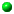

NAME
NAME
|
|
gm - command-line utility to create, edit, compare, convert, or display images
|
|
Contents
|
|
Synopsis
|
|
gm animate [ options ... ] file [ [
options ... ] file ... ]
gm batch [ options ... ] [ script ]
gm benchmark [ options ... ] subcommand
gm compare [ options ... ] reference-image
[ options ... ] compare-image
[ options ... ]
gm composite [ options ... ] change-image base-image
[ mask-image ] output-image
gm conjure [ options ] script.msl
[ [ options ] script.msl ]
gm convert [ [ options ... ] [ input-file ...
] [ options ... ] ] output-file
gm display [ options ... ] file ...
[ [options ... ]file ... ]
gm identify file [ file ... ]
gm import [ options ... ] file
gm mogrify [ options ... ] file ...
gm montage [ options ... ] file [ [
options ... ] file ... ] output-file
gm time subcommand
gm version
|
|
Description
|
|
GraphicsMagick's gm provides a suite of utilities for creating,
comparing, converting, editing, and displaying images. All of the
utilities are provided as sub-commands of a single gm
executable. The gm executable returns the exit code 0 to
indicate success, or 1 to indicate failure:
animate
displays an animation (e.g. a GIF file) on any workstation display
running an X server.
batch
executes an arbitary number of the utility commands
(e.g. convert) in the form of a simple linear batch script in
order to improve execution efficiency, and/or to allow use as a
subordinate co-process under the control of an arbitrary script or
program.
benchmark
executes one of the other utility commands (e.g. convert) for a
specified number of iterations, or execution time, and reports
execution time and other profiling information such as CPU
utilization. Benchmark provides various operating modes
including executing the command with a varying number of threads, and
alternate reporting formats such as comma-separated value (CSV).
compare
compares two images and reports difference statistics according to
specified metrics and/or outputs an image with a visual representation
of the differences. It may also be used to test if images are similar
within a particular range and specified metric, returning a truth
value to the executing environment.
composite
composites images (blends or merges images together) to create new images.
conjure
interprets and executes scripts in
the Magick Scripting Language (MSL).
convert
converts an input file using one image format to an output file with
the same or differing image format while applying an arbitrary number
of image transformations.
display
is a machine architecture independent image processing and display
facility. It can display an image on any workstation display running
an X server.
identify
describes the format and characteristics of one or more image
files. It will also report if an image is incomplete or corrupt.
import
reads an image from any visible window on an X server and
outputs it as an image file. You can capture a single window, the
entire screen, or any rectangular portion of the screen.
mogrify
transforms an image or a sequence of images. These transforms include
image scaling, image rotation, color reduction,
and others. The transmogrified image overwrites the original
image.
montage
creates a composite by combining several separate images. The images
are tiled on the composite image with the name of the image optionally
appearing just below the individual tile.
time
executes a subcommand and reports the user, system, and total
execution time consumed.
version
reports the GraphicsMagick release version, maximum sample-depth,
copyright notice, supported features, and the options used while
building the software.
The GraphicsMagick utilities recognize the following image formats:
| Name | Mode | Description |
| 3FR | r-- | Hasselblad Photo RAW |
| 8BIM | rw- | Photoshop resource format |
| 8BIMTEXT | rw- | Photoshop resource text format |
| 8BIMWTEXT | rw- | Photoshop resource wide text format |
| APP1 | rw- | Raw application information |
| APP1JPEG | rw- | Raw JPEG binary data |
| ART | r-- | PF1: 1st Publisher |
| ARW | r-- | Sony Alpha DSLR RAW |
| AVS | rw+ | AVS X image |
| BIE | rw- | Joint Bi-level Image experts Group |
| | | interchange format |
| BMP | rw+ | Microsoft Windows bitmap image |
| BMP2 | -w- | Microsoft Windows bitmap image v2 |
| BMP3 | -w- | Microsoft Windows bitmap image v3 |
| CACHE | --- | Magick Persistent Cache image format |
| CALS | rw- | Continuous Acquisition and Life-cycle |
| | | Support Type 1 image |
| CAPTION | r-- | Caption (requires separate size info) |
| CIN | rw- | Kodak Cineon Format |
| CMYK | rw- | Raw cyan, magenta, yellow, and black |
| | | samples (8 or 16 bits, depending on |
| | | the image depth) |
| CMYKA | rw- | Raw cyan, magenta, yellow, black, and |
| | | matte samples (8 or 16 bits, depending |
| | | on the image depth) |
| CR2 | r-- | Canon Photo RAW |
| CRW | r-- | Canon Photo RAW |
| CUR | r-- | Microsoft Cursor Icon |
| CUT | r-- | DR Halo |
| DCM | r-- | Digital Imaging and Communications in |
| | | Medicine image |
| DCR | r-- | Kodak Photo RAW |
| DCX | rw+ | ZSoft IBM PC multi-page Paintbrush |
| DNG | r-- | Adobe Digital Negative |
| DPS | r-- | Display PostScript Interpreter |
| DPX | rw- | Digital Moving Picture Exchange |
| EPDF | rw- | Encapsulated Portable Document Format |
| EPI | rw- | Adobe Encapsulated PostScript |
| | | Interchange format |
| EPS | rw- | Adobe Encapsulated PostScript |
| EPS2 | -w- | Adobe Level II Encapsulated PostScript |
| EPS3 | -w- | Adobe Level III Encapsulated PostScript |
| EPSF | rw- | Adobe Encapsulated PostScript |
| EPSI | rw- | Adobe Encapsulated PostScript |
| | | Interchange format |
| EPT | rw- | Adobe Encapsulated PostScript with MS-DOS |
| | | TIFF preview |
| EPT2 | rw- | Adobe Level II Encapsulated PostScript |
| | | with MS-DOS TIFF preview |
| EPT3 | rw- | Adobe Level III Encapsulated PostScript |
| | | with MS-DOS TIFF preview |
| EXIF | rw- | Exif digital camera binary data |
| FAX | rw+ | Group 3 FAX (Not TIFF Group3 FAX!) |
| FITS | rw- | Flexible Image Transport System |
| FRACTAL | r-- | Plasma fractal image |
| FPX | rw- | FlashPix Format |
| GIF | rw+ | CompuServe graphics interchange format |
| GIF87 | rw- | CompuServe graphics interchange format |
| | | (version 87a) |
| GRADIENT | r-- | Gradual passing from one shade to |
| | | another |
| GRAY | rw+ | Raw gray samples (8/16/32 bits, |
| | | depending on the image depth) |
| HISTOGRAM | -w- | Histogram of the image |
| HRZ | r-- | HRZ: Slow scan TV |
| HTML | -w- | Hypertext Markup Language and a |
| | | client-side image map |
| ICB | rw+ | Truevision Targa image |
| ICC | rw- | ICC Color Profile |
| ICM | rw- | ICC Color Profile |
| ICO | r-- | Microsoft icon |
| ICON | r-- | Microsoft icon |
| IDENTITY | r-- | Hald CLUT identity image |
| IMAGE | r-- | GraphicsMagick Embedded Image |
| INFO | -w+ | Image descriptive information and |
| | | statistics |
| IPTC | rw- | IPTC Newsphoto |
| IPTCTEXT | rw- | IPTC Newsphoto text format |
| IPTCWTEXT | rw- | IPTC Newsphoto wide text format |
| JBG | rw+ | Joint Bi-level Image experts Group |
| | | interchange format |
| JBIG | rw+ | Joint Bi-level Image experts Group |
| | | interchange format |
| JNG | rw- | JPEG Network Graphics |
| JP2 | rw- | JPEG-2000 JP2 File Format Syntax |
| JPC | rw- | JPEG-2000 Code Stream Syntax |
| JPEG | rw- | Joint Photographic Experts Group |
| | | JFIF format |
| JPG | rw- | Joint Photographic Experts Group |
| | | JFIF format |
| K25 | r-- | Kodak Photo RAW |
| KDC | r-- | Kodak Photo RAW |
| LABEL | r-- | Text image format |
| M2V | rw+ | MPEG-2 Video Stream |
| MAP | rw- | Colormap intensities and indices |
| MAT | r-- | MATLAB image format |
| MATTE | -w+ | MATTE format |
| MIFF | rw+ | Magick Image File Format |
| MNG | rw+ | Multiple-image Network Graphics |
| MONO | rw- | Bi-level bitmap in least-significant- |
| | | -byte-first order |
| MPC | rw+ | Magick Persistent Cache image format |
| MPEG | rw+ | MPEG-1 Video Stream |
| MPG | rw+ | MPEG-1 Video Stream |
| MRW | r-- | Minolta Photo Raw |
| MSL | r-- | Magick Scripting Language |
| MTV | rw+ | MTV Raytracing image format |
| MVG | rw- | Magick Vector Graphics |
| NEF | r-- | Nikon Electronic Format |
| NULL | r-- | Constant image of uniform color |
| OTB | rw- | On-the-air bitmap |
| P7 | rw+ | Xv thumbnail format |
| PAL | rw- | 16bit/pixel interleaved YUV |
| PALM | rw- | Palm Pixmap |
| PBM | rw+ | Portable bitmap format (black and white) |
| PCD | rw- | Photo CD |
| PCDS | rw- | Photo CD |
| PCL | -w- | Page Control Language |
| PCT | rw- | Apple Macintosh QuickDraw/PICT |
| PCX | rw- | ZSoft IBM PC Paintbrush |
| PDB | rw+ | Palm Database ImageViewer Format |
| PDF | rw+ | Portable Document Format |
| PEF | r-- | Pentax Electronic File |
| PFA | r-- | TrueType font |
| PFB | r-- | TrueType font |
| PGM | rw+ | Portable graymap format (gray scale) |
| PGX | r-- | JPEG-2000 VM Format |
| PICON | rw- | Personal Icon |
| PICT | rw- | Apple Macintosh QuickDraw/PICT |
| PIX | r-- | Alias/Wavefront RLE image format |
| PLASMA | r-- | Plasma fractal image |
| PNG | rw- | Portable Network Graphics |
| PNG24 | rw- | Portable Network Graphics, 24 bit RGB |
| | | opaque only |
| PNG32 | rw- | Portable Network Graphics, 32 bit RGBA |
| | | semitransparency OK |
| PNG8 | rw- | Portable Network Graphics, 8-bit |
| | | indexed, binary transparency only |
| PNM | rw+ | Portable anymap |
| PPM | rw+ | Portable pixmap format (color) |
| PREVIEW | -w- | Show a preview an image enhancement, |
| | | effect, or f/x |
| PS | rw+ | Adobe PostScript |
| PS2 | -w+ | Adobe Level II PostScript |
| PS3 | -w+ | Adobe Level III PostScript |
| PSD | rw- | Adobe Photoshop bitmap |
| PTIF | rw- | Pyramid encoded TIFF |
| PWP | r-- | Seattle Film Works |
| RAF | r-- | Fuji Photo RAW |
| RAS | rw+ | SUN Rasterfile |
| RGB | rw+ | Raw red, green, and blue samples |
| RGBA | rw+ | Raw red, green, blue, and matte samples |
| RLA | r-- | Alias/Wavefront image |
| RLE | r-- | Utah Run length encoded image |
| SCT | r-- | Scitex HandShake |
| SFW | r-- | Seattle Film Works |
| SGI | rw+ | Irix RGB image |
| SHTML | -w- | Hypertext Markup Language and a |
| | | client-side image map |
| STEGANO | r-- | Steganographic image |
| SUN | rw+ | SUN Rasterfile |
| SVG | rw+ | Scalable Vector Gaphics |
| TEXT | rw+ | Raw text |
| TGA | rw+ | Truevision Targa image |
| TIFF | rw+ | Tagged Image File Format |
| TILE | r-- | Tile image with a texture |
| TIM | r-- | PSX TIM |
| TOPOL | r-- | TOPOL X Image |
| TTF | r-- | TrueType font |
| TXT | rw+ | Raw text |
| UIL | -w- | X-Motif UIL table |
| UYVY | rw- | 16bit/pixel interleaved YUV |
| VDA | rw+ | Truevision Targa image |
| VICAR | rw- | VICAR rasterfile format |
| VID | rw+ | Visual Image Directory |
| VIFF | rw+ | Khoros Visualization image |
| VST | rw+ | Truevision Targa image |
| WBMP | rw- | Wireless Bitmap (level 0) image |
| WMF | r-- | Windows Metafile |
| WPG | r-- | Word Perfect Graphics |
| X | rw- | X Image |
| X3F | r-- | Foveon X3 (Sigma/Polaroid) RAW |
| XBM | rw- | X Windows system bitmap (black |
| | | and white) |
| XC | r-- | Constant image uniform color |
| XCF | r-- | GIMP image |
| XMP | rw- | Adobe XML metadata |
| XPM | rw- | X Windows system pixmap (color) |
| XV | rw+ | Khoros Visualization image |
| XWD | rw- | X Windows system window dump (color) |
| YUV | rw- | CCIR 601 4:1:1 or 4:2:2 (8-bit only) |
| | | |
| Modes: | | |
| | r | Read |
| | w | Write |
| | + | Multi-image |
Support for some of these formats require additional programs or libraries.
See README
in the source package for where to find optional additional software.
Note, a format delineated with + means that if more than one
image is specified, frames are combined into a single multi-image
file. Use +adjoin if you want a single image produced for each
frame.
Your installation might not support all of the formats in the list.
To get an accurate listing of the formats supported by your particular
configuration, run "gm convert -list format".
Raw images are expected to have one byte per pixel unless gm is
compiled in 16-bit quantum mode or in 32-bit quantum mode. Here, the
raw data is expected to be stored two or four bytes per pixel,
respectively, in most-significant-byte-first order. For example, you
can tell if gm was compiled in 16-bit mode by typing "gm
version" without any options, and looking for "Q:16" in the first line
of output.
|
Back to Contents
|
Files and Formats
|
|
By default, the image format is determined by its magic number, i.e., the
first few bytes of the file. To specify
a particular image format, precede the filename with an image format name
and a colon (i.e.ps:image) or specify the image type as the
filename suffix (i.e.image.ps).
The magic number takes precedence over the filename suffix
and the prefix takes precedence over the magic number and the suffix
in input files.
When a file is read, its magic number is stored in the "image->magick"
string.
In output files, the prefix takes precedence over the filename suffix,
and the filename suffix takes precedence over the
"image->magick" string.
To read the "built-in" formats (GRANITE, H, LOGO,
NETSCAPE, PLASMA, and ROSE) use a prefix (including the colon) without a
filename or suffix. To read the XC format, follow the colon with a color
specification. To read the CAPTION format, follow the colon with a text
string or with a filename prefixed with the at symbol (@).
When you specify X as your image type, the filename has special
meaning. It specifies an X window by id, name, or
root. If
no filename is specified, the window is selected by clicking the mouse
in the desired window.
Specify input_file as - for standard input,
output_file as - for standard output.
If input_file has the extension .Z or .gz, the
file is uncompressed with uncompress or gunzip
respectively.
If output_file has the extension .Z or .gz,
the file is compressed using with compress or gzip respectively.
Use an optional index enclosed in brackets after an input file name to
specify a desired subimage of a multi-resolution image format like
Photo CD (e.g. "img0001.pcd[4]") or a range for MPEG images
(e.g. "video.mpg[50-75]"). A subimage specification can be
disjoint (e.g. "image.tiff[2,7,4]"). For raw images, specify
a subimage with a geometry (e.g. -size 640x512
"image.rgb[320x256+50+50]"). Surround the image name with
quotation marks to prevent your shell from interpreting the square
brackets. Single images are written with the filename you
specify. However, multi-part images (e.g., a multi-page PostScript
document with +adjoin specified) may be written with the scene
number included as part of the filename. In order to include the scene
number in the filename, it is necessary to include a printf-style
%d format specification in the file name and use the +adjoin
option. For example,
image%02d.miff
writes files image00.miff, image01.miff, etc. Only a single
specification is allowed within an output filename. If more than one
specification is present, it will be ignored. It is best to embed the
scene number in the base part of the file name, not in the extension,
because the extension will not be a recognizeable image type.
When running a commandline utility, you can
prepend an at sign @ to a filename to read a list of image
filenames from that file. This is convenient in the event you have too
many image filenames to fit on the command line.
|
Back to Contents
|
Options
|
|
Options are processed in command line order. Any option you specify on
the command line remains in effect for the set of images that follows,
until the set is terminated by the appearance of any option or -noop.
Some options only affect the decoding of images and others only the encoding.
The latter can appear after the final group of input images.
This is a combined list of the command-line options used by the
GraphicsMagick utilities (animate, compare,
composite, convert, display, identify,
import, mogrify and montage).
In this document, angle brackets ("<>") enclose variables and curly
brackets ("{}") enclose optional parameters. For example,
"-fuzz <distance>{%}" means you can use the
option "-fuzz 10"
or "-fuzz 2%".
|
 -adjoin
-adjoin
|
| join images into a single multi-image file |
|
By default, all images of an image sequence are stored in the same
file. However, some formats (e.g. JPEG) do not support storing more
than one image per file and only the first frame in an image sequence
will be saved unless the result is saved to separate files. Use
+adjoin to force saving multiple frames to multiple numbered
files. If +adjoin is used, then the output filename must
include a printf style formatting specification for the numeric part
of the filename. For example, |
|
-affine <matrix>
|
|
This option provides a transform matrix {sx,rx,ry,sy,tx,ty} for
use by subsequent -draw or -transform options. |
|
-antialias
|
|
By default antialiasing algorithms are used when drawing objects (e.g. lines)
or rendering vector formats (e.g. WMF and Postscript). Use +antialias to
disable use of antialiasing algorithms. Reasons to disable antialiasing
include avoiding increasing colors in the image, or improving rendering speed. |
|
-append
|
|
This option creates a single image where the images in the original set
are stacked top-to-bottom. If they are not of the same width,
any narrow images will be expanded to fit using the background color.
Use +append to stack images left-to-right. The set of images
is terminated by the appearance of any option.
If the -append
option appears after all of the input images, all images are appended. |
|
-asc-cdl <spec>
|
| apply ASC CDL color transform |
|
Applies ("bakes in") the ASC CDL, which is a format for the exchange
of basic primary color grading information between equipment and
software from different manufacturers. The format defines the math for
three functions: slope, offset and power. Each function uses a number
for the red, green, and blue color channels for a total of nine
numbers comprising a single color decision. The tenth number
(optional) is for chromiance (saturation) as specified by ASC CDL
1.2. |
|
The argument string is comma delimited and is in the following form
(but without invervening spaces or line breaks) |
|
redslope,redoffset,redpower:
greenslope,greenoffset,greenpower:
blueslope,blueoffset,bluepower:
saturation
|
|
with the unity (no change) specification being: |
|
"1.0,0.0,1.0:1.0,0.0,1.0:1.0,0.0,1.0:1.0"
|
|
-authenticate <string>
|
| decrypt image with this password |
|
Use this option to supply a password for decrypting an image or an
image sequence, if it is being read from a format such as PDF that supports
encryption. Encrypting images being written is not supported. |
|
-auto-orient
|
| orient (rotate) image so it is upright |
|
Adjusts the image orienation so that it is suitable for viewing. Uses
the orientation tag obtained from the image file or as supplied by the
-orient option. |
|
-average
|
|
The set of images
is terminated by the appearance of any option.
If the -average
option appears after all of the input images, all images are averaged. |
|
-backdrop
|
| display the image centered on a backdrop. |
|
This backdrop covers the entire workstation screen and is useful for hiding
other X window activity while viewing the image. The color of the backdrop
is specified as the foreground color (X11 default is black). |
|
-background <color>
|
|
The color is specified using the format described under the -fill
option. |
|
-black-threshold red[,green][,blue][,opacity]
|
| pixels below the threshold become black |
|
Use -black-threshold to set pixels with values below the specified
threshold to minimum value (black). If only one value is supplied, or the
red, green, and blue values are identical, then intensity thresholding is
used. If the color threshold values are not identical then channel-based
thresholding is used, and color distortion will occur. Specify a negative
value (e.g. -1) if you want a channel to be ignored but you do want to
threshold a channel later in the list. If a percent (%) symbol is
appended, then the values are treated as a percentage of maximum
range. |
|
-blue-primary <x>,<y>
|
| blue chromaticity primary point |
|
-blur <radius>{x<sigma>}
|
| blur the image with a Gaussian operator |
|
Blur with the given radius and
standard deviation (sigma). |
|
-border <width>x<height>
|
| surround the image with a border of color |
|
See -geometry for details
about the geometry specification. |
|
-bordercolor <color>
|
|
The color is specified using the format described under the -fill
option. |
|
-borderwidth <geometry>
|
|
-box <color>
|
| set the color of the annotation bounding box |
|
The color is specified using the format described under the -fill
option. |
|
See -draw for further
details. |
|
-channel <type>
|
|
Choose from: Red, Green, Blue, Opacity,
Matte, Cyan, Magenta, Yellow, Black,
or Gray. |
|
Use this option to extract a particular channel from the image.
Opacity,
for example, is useful for extracting the opacity values from an image. |
|
-charcoal <factor>
|
| simulate a charcoal drawing |
|
-chop <width>x<height>{+-}<x>{+-}<y>{%}
|
| remove pixels from the interior of an image |
|
Width and height give the number of columns and rows to remove,
and x and y are offsets that give the location of the
leftmost column and topmost row to remove. |
|
The x offset normally specifies the leftmost column to remove.
If the -gravity option is present with NorthEast, East,
or SouthEast
gravity, it gives the distance leftward from the right edge
of the image to the rightmost column to remove. Similarly, the y offset
normally specifies the topmost row to remove, but if
the -gravity option is present with SouthWest, South,
or SouthEast
gravity, it specifies the distance upward from the bottom edge of the
image to the bottom row to remove. |
|
The -chop option removes entire rows and columns,
and moves the remaining corner blocks leftward and upward to close the gaps. |
|
-clip
|
| apply the clipping path, if one is present |
|
If a clipping path is present, it will be applied to subsequent operations. |
|
For example, if you type the following command: |
|
gm convert -clip -negate cockatoo.tif negated.tif
|
|
only the pixels within the clipping path are negated. |
|
The -clip feature requires the XML library. If the XML library
is not present, the option is ignored. |
|
-coalesce
|
| merge a sequence of images |
|
Each image N in the sequence after Image 0 is replaced with the image
created by flattening images 0 through N. |
|
The set of images
is terminated by the appearance of any option.
If the -coalesce
option appears after all of the input images, all images are coalesced. |
|
-colorize <value>
|
| colorize the image with the pen color |
|
Specify the amount of colorization as a percentage. You can apply separate
colorization values to the red, green, and blue channels of the image with
a colorization value list delimited with slashes (e.g. 0/0/50). |
|
The -colorize option may be used in conjunction with -modulate
to produce a nice sepia toned image like: |
|
gm convert input.ppm -modulate 115,0,100 \
-colorize 7,21,50 output.ppm.
|
|
-colormap <type>
|
|
Choose between shared or private. |
|
This option only applies when the default X server visual is PseudoColor
or GRAYScale. Refer to -visual for more details. By default,
a shared colormap is allocated. The image shares colors with other X clients.
Some image colors could be approximated, therefore your image may look
very different than intended. Choose Private and the image colors
appear exactly as they are defined. However, other clients may
go technicolor when the image colormap is installed. |
|
-colors <value>
|
| preferred number of colors in the image |
|
The actual number of colors in the image may be less than your request,
but never more. Note, this is a color reduction option. Images with less
unique colors than specified with this option will have any duplicate or
unused colors removed. The ordering of an existing color palette may be
altered. When converting an image from color to grayscale, convert the
image to the gray colorspace before reducing the number of colors since
doing so is most efficient. Refer to <a
href="quantize.html">quantize for more details. |
|
Note, options -dither, -colorspace, and -treedepth
affect the color reduction algorithm. |
|
-colorspace <value>
|
|
Choices are:
CineonLog, CMYK, GRAY, HSL, HWB,
OHTA, RGB, Rec601Luma, Rec709Luma,
Rec601YCbCr, Rec709YCbCr, Transparent, XYZ,
YCbCr, YIQ, YPbPr, or YUV. |
|
Color reduction, by default, takes place in the RGB color space. Empirical
evidence suggests that distances in color spaces such as YUV or YIQ correspond
to perceptual color differences more closely than do distances in RGB space.
These color spaces may give better results when color reducing an image.
Refer to quantize for more details. |
| Two gray colorspaces are supported. The Rec601Luma space is
based on the recommendations for legacy NTSC television (ITU-R
BT.601-5). The Rec709Luma space is based on the
recommendations for HDTV (Rec. ITU-R BT.709-5) and is suitable for use
with computer graphics, and for contemporary CRT displays. The
GRAY colorspace currently selects the Rec601Luma
colorspace by default for backwards compatibly reasons. This default
may be re-considered in the future.
|
| Two YCbCr colorspaces are supported. The Rec601YCbCr space is
based on the recommendations for legacy NTSC television (ITU-R BT.601-5). The
Rec709CbCr space is based on the recommendations for HDTV (Rec.
ITU-R BT.709-5) and is suitable for suitable for use with computer
graphics, and for contemporary CRT displays. The YCbCr colorspace
specification is equivalent toRec601YCbCr.
|
|
The Transparent color space behaves uniquely in that it preserves
the matte channel of the image if it exists. |
|
The -colors or -monochrome option, or saving to a file
format which requires color reduction, is required for this option to
take effect. |
|
-comment <string>
|
| annotate an image with a comment |
|
Use this option to assign a specific comment to the image, when writing
to an image format that supports comments. You can include the
image filename, type, width, height, or other image attribute by embedding
special format characters listed under the -format option.
The comment is not drawn on the image, but is embedded in the image
datastream via a "Comment" tag or similar mechanism. If you want the
comment to be visible on the image itself, use the -draw option
instead. |
|
produces an image comment of MIFF:bird.miff 512x480 for an image
titled bird.miff and whose width is 512 and height is 480. |
|
If the first character of string is @, the image comment
is read from a file titled by the remaining characters in the string.
Please note that if the string comes from an untrusted source that it
should be sanitized before use since otherwise the content of an
arbitrary readable file could be incorporated in a comment in the
output file (a security risk). |
|
If the -comment option appears multiple times, only the last comment is
stored. |
|
In PNG images, the comment is stored in a tEXt or zTXt chunk
with the keyword "comment". |
|
-compose <operator>
|
| the type of image composition |
|
The description of composition uses abstract terminology in order to
allow the the description to be more clear, while avoiding constant
values which are specific to a particular build configuration. Each image
pixel is represented by red, green, and blue levels (which are equal for
a gray pixel). MaxRGB is the maximum integral value which may be stored
in the red, green, or blue channels of the image. Each image pixel may
also optionally (if the image matte channel is enabled) have an
associated level of opacity (ranging from opaque to transparent), which
may be used to determine the influence of the pixel color when
compositing the pixel with another image pixel. If the image matte
channel is disabled, then all pixels in the image are treated as opaque.
The color of an opaque pixel is fully visible while the color of a
transparent pixel color is entirely absent (pixel color is ignored). |
|
By definition, raster images have a rectangular shape. All image rows are
of equal length, and all image columns have the same number of rows. By
treating the opacity channel as a visual "mask" the rectangular image may
be given a "shape" by treating the opacity channel as a cookie-cutter for
the image. Pixels within the shape are opaque, while pixels outside the
shape are transparent. Pixels on the boundary of the shape may be between
opaque and transparent in order to provide antialiasing (visually smooth
edges). The description of the composition operators use this concept of
image "shape" in order to make the description of the operators easier to
understand. While it is convenient to describe the operators in terms of
"shapes" they are by no means limited to mask-style operations since they
are based on continuous floating-point mathematics rather than simple
boolean operations. |
|
By default, the Over composite operator is used. The following
composite operators are available: |
|
Over
In
Out
Atop
Xor
Plus
Minus
Add
Subtract
Difference
Divide
Multiply
Bumpmap
Copy
CopyRed
CopyGreen
CopyBlue
CopyOpacity
CopyCyan
CopyMagenta
CopyYellow
CopyBlack
|
|
The behavior of each operator is described below. |
|
- Over
- The result will be the union of the two image shapes, with opaque areas
of change-image obscuring base-image in the region of
overlap.
- In
- The result is simply change-image cut by the shape of
base-image. None of the image data of base-image will be in
the result.
- Out
- The resulting image is change-image with the shape of
base-image cut out.
- Atop
- The result is the same shape as base-image, with
change-image obscuring base-image where the image shapes
overlap. Note this differs from over because the portion of
change-image outside base-image's shape does not appear in
the result.
- Xor
- The result is the image data from both change-image and
base-image that is outside the overlap region. The overlap region
will be blank.
- Plus
- The result is just the sum of the image data. Output values are cropped
to MaxRGB (no overflow). This operation is independent of the matte
channels.
- Minus
- The result of change-image - base-image, with underflow
cropped to zero. The matte channel is ignored (set to opaque, full
coverage).
- Add
- The result of change-image + base-image, with overflow
wrapping around (mod MaxRGB+1).
- Subtract
- The result of change-image - base-image, with underflow
wrapping around (mod MaxRGB+1). The add and subtract
operators can be used to perform reversible transformations.
- Difference
- The result of abs(change-image - base-image). This is
useful for comparing two very similar images.
- Divide
- The result of change-image / base-image. This is useful
for improving the readability of text on unevenly illuminated photos (by
using a gaussian blurred copy of change-image as base-image).
- Multiply
- The result of change-image * base-image. This is useful for
the creation of drop-shadows.
- Bumpmap
- The result base-image shaded by change-image.
- Copy
- The resulting image is base-image replaced with
change-image. Here the matte information is ignored.
- CopyRed
- The resulting image is the red channel in base-image replaced with
the red channel in change-image. The other channels are copied
untouched.
- CopyGreen
- The resulting image is the green channel in base-image replaced
with the green channel in change-image. The other channels are
copied untouched.
- CopyBlue
- The resulting image is the blue channel in base-image replaced
with the blue channel in change-image. The other channels are
copied untouched.
- CopyOpacity
- The resulting image is the opacity channel in base-image replaced
with the opacity channel in change-image. The other channels are
copied untouched.
- CopyCyan
- The resulting image is the cyan channel in base-image replaced
with the cyan channel in change-image. The other channels are
copied untouched. Use of this operator requires that base-image be in
CMYK(A) colorspace.
- CopyMagenta
- The resulting image is the magenta channel in base-image
replaced with the magenta channel in change-image. The other
channels are copied untouched. Use of this operator requires that
base-image be in CMYK(A) colorspace.
- CopyYellow
- The resulting image is the yellow channel in base-image
replaced with the yellow channel in change-image. The other
channels are copied untouched. Use of this operator requires that
base-image be in CMYK(A) colorspace.
- CopyBlack
- The resulting image is the black channel in base-image
replaced with the black channel in change-image. The other
channels are copied untouched. Use of this operator requires that
base-image be in CMYK(A) colorspace. If change-image is not in CMYK
space, then the change-image pixel intensities are used.
|
|
-compress <type>
|
| the type of image compression |
|
Choices are: None, BZip, Fax,
Group3, Group4,
JPEG, Lossless,
LZW, RLE, Zip, LZMA, JPEG2000,
JPEG2000, JBIG, JBIG2, WebP, or ZSTD.
|
|
Specify +compress to store the binary image in an uncompressed format.
The default is the compression type of the specified image file. |
|
"Lossless" refers to lossless JPEG, which is only available if
the JPEG library has been patched to support it. Use of lossless JPEG is
generally not recommended. |
|
Use the -quality option to set the compression level to be used
by the JPEG, JPEG-2000, PNG, MIFF, MPEG, and TIFF encoders. Use the
-sampling-factor option to set the sampling factor to be used
by the DPX, JPEG, MPEG, and YUV encoders for downsampling the chroma
channels. |
|
-contrast
|
| enhance or reduce the image contrast |
|
This option enhances the intensity differences between the lighter and
darker elements of the image. Use -contrast to enhance
the image
or +contrast to reduce the image contrast.
|
|
For a more pronounced effect you can repeat the option: |
|
gm convert rose: -contrast -contrast rose_c2.png
|
|
-convolve <kernel>
|
| convolve image with the specified convolution kernel |
|
The kernel is specified as a comma-separated list of floating point
values, ordered left-to right, starting with the top row. The order of
the kernel is determined by the square root of the number of entries.
Presently only square kernels are supported. |
|
-create-directories
|
| create output directory if required |
|
Use this option with -output-directory if the input paths contain
subdirectories and it is desired to create similar subdirectories in the
output directory. Without this option, mogrify will fail if the
required output directory does not exist. |
|
-crop <width>x<height>{+-}<x>{+-}<y>{%}
|
| preferred size and location of the cropped image |
|
See -geometry for details
about the geometry specification. |
|
The width and height give the size of the image that remains after cropping,
and x and y are offsets that give the location of the top left
corner of the cropped
image with respect to the original image. To specify the amount to be
removed, use -shave instead. |
|
If the x and y offsets are present, a single image is
generated, consisting of the pixels from the cropping region.
The offsets specify the location of the upper left corner of
the cropping region measured downward and rightward with respect to the
upper left corner of the image.
If the -gravity option is present with NorthEast, East,
or SouthEast
gravity, it gives the distance leftward from the right edge
of the image to the right edge of the cropping region. Similarly, if
the -gravity option is present with SouthWest, South,
or SouthEast
gravity, the distance is measured upward between the bottom
edges. |
|
If the x and y offsets are omitted, a set of tiles of the
specified geometry, covering the entire input image, is generated. The
rightmost tiles and the bottom tiles are smaller if the
specified geometry extends beyond the dimensions of the input image. |
|
-cycle <amount>
|
| displace image colormap by amount |
|
Amount defines the number of positions each colormap entry isshifted.
|
|
-debug <events>
|
|
The events parameter specifies which events are to be logged. It
can be either None, All, or a comma-separated list
consisting of one or more of the following domains:
Annotate,
Blob,
Cache,
Coder,
Configure,
Deprecate,
Error,
Exception,
FatalError,
Information,
Locale,
Option,
Render,
Resource,
TemporaryFile,
Transform,
User.
Warning, or
X11,
For example, to log cache and blob events, use |
|
gm convert -debug "Cache,Blob" rose: rose.png
|
|
The "User" domain is normally empty, but developers can log "User" events
in their private copy of GraphicsMagick. |
|
Use the -log option to specify the format for debugging output. |
|
Use +debug to turn off all logging. |
|
An alternative to using -debug is to use the MAGICK_DEBUG
environment variable. The allowed values for the MAGICK_DEBUG
environment variable are the same as for the -debug option. |
|
-deconstruct
|
| break down an image sequence into constituent parts |
|
This option compares each image with the next in a sequence and
returns the maximum bounding region of any pixel differences it discovers.
This method can undo a coalesced sequence returned by the
-coalesce option, and is useful for removing redundant information
from a GIF or MNG animation. |
|
The sequence of images
is terminated by the appearance of any option.
If the -deconstruct
option appears after all of the input images, all images are deconstructed. |
|
-define <key>{=<value>},...
|
| add coder/decoder specific options |
| This option creates one or more definitions for coders and
decoders to use while reading and writing image data. Definitions
may be passed to coders and decoders to control options that are
specific to certain image formats. If value is missing for a
definition, an empty-valued definition of a flag will be created with
that name. This is used to control on/off options. Use +define
<key>,... to remove definitions previously created. Use
+define "*" to remove all existing definitions. |
|
The following definitions may be created: |
|
- cineon:colorspace={rgb|cineonlog}
- Use the cineon:colorspace option when reading a Cineon file to
specify the colorspace the Cineon file uses. This overrides the colorspace
type implied by the DPX header (if any).
- dpx:bits-per-sample=<value>
- If the dpx:bits-per-sample key is defined, GraphicsMagick will write
DPX images with the specified bits per sample, overriding any existing
depth value. If this option is not specified, then the value is based on
the existing image depth value from the original image file. The DPX
standard supports bits per sample values of 1, 8, 10, 12, and 16. Many
DPX readers demand a sample size of 10 bits with type A padding (see
below).
- dpx:colorspace={rgb|cineonlog}
- Use the dpx:colorspace option when reading a DPX file to
specify the colorspace the DPX file uses. This overrides the colorspace
type implied by the DPX header (if any).
- dpx:packing-method={packed|a|b|lsbpad|msbpad}
- DPX samples are output within 32-bit words. They may be tightly
packed end-to-end within the words ("packed"), padded with null bits to
the right of the sample ("a" or "lsbpad"), or padded with null bits to the
left of the sample ("b" or "msbpad"). This option only has an effect for
sample sizes of 10 or 12 bits. If samples are not packed, the DPX
standard recommends type A padding. Many DPX readers demand a sample size
of 10 bits with type A padding.
- dpx:pixel-endian={lsb|msb}
- Allows the user to specify the endian order of the pixels when
reading or writing the DPX files. Sometimes this is useful if the file is
(or must be) written incorrectly so that the file header and the pixels
use different endianness.
- dpx:swap-samples={true|false}
- GraphicsMagick strives to adhere to the DPX standard but certain
aspects of the standard can be quite confusing. As a result, some 10-bit
DPX files have Red and Blue interchanged, or Cb and Cr interchanged due
to an different interpretation of the standard, or getting the wires
crossed. The swap-samples option may be supplied when reading or writing
in order to read or write using the necessary sample order.
- gradient:direction={South|North|West|East|NorthWest|NorthEast|SouthWest|SouthEast}
- By default, the gradient coder produces a gradient from top to
bottom ("South"). Since GraphicsMagick 1.3.35, the gradient direction
may be specified to produce gradient vectors according to a
gravity-like specification. The arguments are South (Top to
Bottom), North (Bottom to Top), West (Right to Left),
East (Left to Right), NorthWest (Bottom-Right to
Top-Left), NorthEast (Bottom-Left to Top-Right),
SouthWest (Top-Right Bottom-Left), and SouthEast
(Top-Left to Bottom-Right).
- jp2:rate=<value>
- Specify the compression factor to use while writing JPEG-2000
files. The compression factor is the reciprocal of the compression
ratio. The valid range is 0.0 to 1.0, with 1.0 indicating lossless
compression. If defined, this value overrides the -quality
setting. The default quality setting of 75 results in a rate value of
0.06641.
- jpeg:block-smoothing={true|false}
- Enables or disables block smoothing when reading a JPEG file
(default enabled).
- jpeg:dct-method=<value>
- Selects the IJG JPEG library DCT implementation to use. The
encoding implementations vary in speed and encoding error. The
available choices for value are islow, ifast,
float, default and fastest. Note that
fastest might not necessarily be fastest on your CPU, depending
on the choices made when the JPEG library was built and how your CPU
behaves.
- jpeg:fancy-upsampling={true|false}
- Enables or disables fancy upsampling when reading a JPEG file
(default enabled).
- jpeg:max-scan-number=<value>
- Specifies an integer value for the maximum number of progressive
scans allowed in a JPEG file. The default maximum is 100 scans. This
limit is imposed due to a weakness in the JPEG standard which allows
small JPEG files to take many minutes or hours to be read.
- jpeg:max-warnings=<value>
- Specifies an integer value for how many warnings are allowed for
any given error type before being promoted to a hard error. JPEG
files producing excessive warnings indicate a problem with the file.
- jpeg:optimize-coding={true|false}
- Selects if huffman encoding should be used. Huffman encoding is enabled
by default, but may be disabled for very large images since it encoding
requires that the entire image be buffered in memory. Huffman encoding
produces smaller JPEG files at the expense of added compression time and
memory consumption.
- jpeg:preserve-settings
- If the jpeg:preserve-settings flag is defined, the JPEG encoder will
use the same "quality" and "sampling-factor" settings that were found
in the input file, if the input was in JPEG format. These settings are
also preserved if the input is a JPEG file and the output is a JNG
file. If the colorspace of the output file differs from that of the
input file, the quality setting is preserved but the sampling-factors
are not.
- pcl:fit-to-page
- If the pcl:fit-to-page flag is defined, then the printer is
requested to scale the image to fit the page size (width and/or
height).
- mng:maximum-loops=<value>
- mng:maximum-loops specifies the maximum number of loops allowed to
be specified by a MNG LOOP chunk. Without an imposed limit, a MNG file
could request up to 2147483647 loops, which could run for a very long
time. The current default limit is 512 loops.
- pdf:use-cropbox={true|false}
- If the pdf:use-cropbox flag is set to true, then
Ghostscript is requested to apply the PDF crop box.
- pdf:stop-on-error={true|false}
- If the pdf:stop-on-error flag is set to true, then
Ghostscript is requested to stop processing the PDF when the first
error is encountered. Otherwise it will attempt to process all
requested pages.
- ps:imagemask
- If the ps:imagemask flag is defined, the PS3 and EPS3 coders will
create Postscript files that render bilevel images with the Postscript
imagemask operator instead of the image operator.
- ptif:minimum-geometry=<geometry>
- If the ptif:minimum-geometry key is defined, GraphicsMagick will
use it to determine the minimum frame size to output when writing a
pyramid TIFF file (a TIFF file containing a succession of reduced
versions of the first frame). The default minimum geometry is 32x32.
- tiff:alpha={unspecified|associated|unassociated}
- Specify the TIFF alpha channel type when reading or writing TIFF files,
overriding the normal value. The default alpha channel type for new files
is unspecified alpha. Existing alpha settings are preserved when
converting from one TIFF file to another. When a TIFF file uses
associated alpha, the image pixels are pre-multiplied (i.e. altered) with
the alpha channel. Files with "associated" alpha appear as if they were
alpha composited on a black background when the matte channel is
disabled. If the unassociated alpha type is selected, then the alpha
channel is saved without altering the pixels. Photoshop recognizes
associated alpha as transparency information, if the file is saved with
unassociated alpha, the alpha information is loaded as an independent
channel. Note that for many years, ImageMagick and GraphicsMagick marked
TIFF files as using associated alpha, without properly pre-multiplying
the pixels.
- tiff:fill-order={msb2lsb|lsb2msb}
- If the tiff:fill-order key is defined, GraphicsMagick will use it to
determine the bit fill order used while writing TIFF files. The normal default
is "msb2lsb", which matches the native bit order of all modern CPUs. The
only exception to this is when Group3 or Group4 FAX compression is
requested since FAX machines send data in bit-reversed order and
therefore RFC 2301 recommends using reverse order.
- tiff:group-three-options=<value>
- If the tiff:group-three-options key is defined, GraphicsMagick
will use it to set the group3 options tag when writing
group3-compressed TIFF. Please see the TIFF specification for the
usage of this tag. The default value is 4.
- tiff:ignore-tags=<tags>
- If the tiff:ignore-tags key is defined, then it is used as a list
of comma-delimited integer TIFF tag values to ignore while reading the
TIFF file. This is useful in order to be able to read files which
which otherwise fail to read due to problems with TIFF tags. Note
that some TIFF tags are required in order to be able to read the image
data at all.
- tiff:report-warnings={false|true}
- If the tiff:report-warnings key is defined and set to true,
then TIFF warnings are reported as a warning exception rather than as
a coder log message. Such warnings are reported after the image has
been read or written. Most TIFF warnings are benign but sometimes
they may help deduce problems with the TIFF file, or help detect that
the TIFF file requires a special application to read successfully due
to the use of proprietary or specialized extensions.
- tiff:sample-format={unsigned|ieeefp}
- If the tiff:sample-format key is defined, GraphicsMagick will use it to
determine the sample format used while writing TIFF files. The default is
"unsigned". Specify "ieeefp" in order to write floating-point TIFF
files with float (32-bit) or double (64-bit) values. Use the
tiff:bits-per-sample define to determine the type of floating-point value
to use.
- tiff:max-sample-value=<value>
- If the tiff:max-sample-value key is defined, GraphicsMagick will use the
assigned value as the maximum floating point value while reading or
writing IEEE floating point TIFFs. Otherwise the maximum value is 1.0 or
the value obtained from the file's SMaxSampleValue tag (if present). The
floating point data is currently not scanned in advance to determine a
best maximum sample value so if the range is not 1.0, or the
SMaxSampleValue tag is not present, it may be necessary to
(intelligently) use this parameter to properly read a file.
- tiff:min-sample-value=<value>
- If the tiff:min-sample-value key is defined, GraphicsMagick will use
the assigned value as the minimum floating point value while reading or
writing IEEE floating point TIFFs. Otherwise the minimum value is 0.0 or
the value obtained from the file's SMinSampleValue tag (if present).
- tiff:bits-per-sample=<value>
- If the tiff:bits-per-sample key is defined, GraphicsMagick will write
images with the specified bits per sample, overriding any existing depth
value. Value may be any in the range of 1 to 32, or 64 when the default
'unsigned' format is written, or 16/32/24/64 if IEEEFP format is written.
Please note that the baseline TIFF 6.0 specification only requires
readers to handle certain powers of two, and the values to be handled
depend on the nature of the image (e.g. colormapped, grayscale, RGB, CMYK).
- tiff:samples-per-pixel=<value>
- If the tiff:samples-per-pixel key is defined to a value, the TIFF coder
will write TIFF images with the defined samples per pixel, overriding any
value stored in the image. This option should not normally be used.
- tiff:rows-per-strip=<value>
- Allows the user to specify the number of rows per TIFF strip.
Rounded up to a multiple of 16 when using JPEG compression. Ignored when
using tiles.
- tiff:strip-per-page=true
- Requests that the image is written in a single TIFF strip. This is
normally the default when group3 or group4 compression is requested
within reasonable limits. Requesting a single strip for large images may
result in failure due to resource consumption in the writer or reader.
- tiff:tile
- Enable writing tiled TIFF (rather than stripped) using the default tile
size. Tiled TIFF organizes the image as an array of smaller images
(tiles) in order to enable random access.
- tiff:tile-geometry=<width>x<height>
- Specify the tile size to use while writing tiled TIFF. Width and
height should be a multiple of 16. If the value is not a multiple of 16,
then it will be rounded down. Enables tiled TIFF if it has not already
been enabled. GraphicsMagick does not use tiled storage internally so
tiles need to be converted back and forth from the internal
scanline-oriented storage to tile-oriented storage. Testing with typical
RGB images shows that useful square tile size values range from 128x128
to 1024x1024. Large images which require using a disk-based pixel cache
benefit from large tile sizes while images which fit in memory work well
with smaller tile sizes.
- tiff:tile-width=<width>
- Specify the tile width to use while writing tiled TIFF. The tile height
is then defaulted to an appropriate size. Width should be a multiple of
16. If the value is not a multiple of 16, then it will be rounded down.
Enables tiled TIFF if it has not already been enabled.
- tiff:tile-height=<height>
- Specify the tile height to use while writing tiled TIFF. The tile width
is then defaulted to an appropriate size. Height should be a multiple of
16. If the value is not a multiple of 16, then it will be rounded down.
Enables tiled TIFF if it has not already been enabled.
- tiff:webp-lossless={TRUE|FALSE}
- Specify a value of TRUE to enable lossless mode while
writing WebP-compressed TIFF files. The WebP webp:lossless
option may also be used. The quality factor set by the
-quality option may be used to influence the level of effort
expended while compressing.
- tiff:zstd-compress-level=<value>
- Specify the compression level to use while writing Zstd-compressed
TIFF files. The valid range is 1 to 22. If this define is not
specified, then the 'quality' value is used such that the default
quality setting of 75 is translated to a compress level of 9 such that
'quality' has a useful range of 10-184 if used for this purpose.
- webp:lossless={true|false}
- Enable lossless encoding.
- webp:method={0-6}
- Quality/speed trade-off.
- webp:image-hint={default,graph,photo,picture}
- Hint for image type.
- webp:target-size=<integer>
- Target size in bytes.
- webp:target-psnr=<float>
- Minimal distortion to try to achieve.
- webp:segments={1-4}
- Maximum number of segments to use.
- webp:sns-strength={0-100}
- Spatial Noise Shaping.
- webp:filter-strength={0-100}
- Filter strength.
- webp:filter-sharpness={0-7}
- Filter sharpness.
- webp:filter-type={0,1}
- Filtering type. 0 = simple, 1 = strong (only used if
filter-strength > 0 or autofilter is enabled).
- webp:auto-filter={true|false}
- Auto adjust filter's strength.
- webp:alpha-compression=<integer>
- Algorithm for encoding the alpha plane (0 = none, 1 = compressed
with WebP lossless). Default is 1.
- webp:alpha-filtering=<integer>
- Predictive filtering method for alpha plane. 0: none, 1: fast, 2:
best. Default is 1.
- webp:alpha-quality={0-100}
- Between 0 (smallest size) and 100 (lossless). Default is 100.
- webp:pass=[1..10]
- Number of entropy-analysis passes.
- webp:show-compressed={true|false}
- Export the compressed picture back. In-loop filtering is not
applied.
- webp:preprocessing=[0,1,2]
- 0=none, 1=segment-smooth, 2=pseudo-random dithering
- webp:partitions=[0-3]
- log2(number of token partitions) in [0..3]. Default is 0 for
easier progressive decoding.
- webp:partition-limit={0-100}
- Quality degradation allowed to fit the 512k limit on prediction
modes coding (0: no degradation, 100: maximum possible
degradation).
- webp:emulate-jpeg-size={true|false}
- If true, compression parameters will be remapped to better match
the expected output size from JPEG compression. Generally, the output
size will be similar but the degradation will be lower.
- webp:thread-level=<integer>
- If non-zero, try and use multi-threaded encoding.
- webp:low-memory={true|false}
- If set, reduce memory usage (but increase CPU use)
- webp:use-sharp-yuv={true|false}
- If set, if needed, use sharp (and slow) RGB->YUV conversion
|
|
For example, to create a postscript file that will render only the black
pixels of a bilevel image, use: |
|
gm convert bilevel.tif -define ps:imagemask eps3:stencil.ps
|
|
-delay <1/100ths of a second>
|
| display the next image after pausing |
|
This option is useful for regulating the animation of image sequences
Delay/100 seconds must expire before the display
of the next image. The default is no delay between each showing of the
image sequence. The maximum delay is 65535. |
|
You can specify a delay range (e.g. -delay 10-500) which sets the
minimum and maximum delay. |
|
-density <width>x<height>
|
| horizontal and vertical resolution in pixels of the image |
| This option specifies the image resolution to store while encoding a
raster image or the canvas resolution while rendering (reading) vector
formats such as Postscript, PDF, WMF, and SVG into a raster image. Image
resolution provides the unit of measure to apply when rendering to an
output device or raster image. The default unit of measure is in dots
per inch (DPI). The -units option may be used to select dots per
centimeter instead. |
| The default resolution is 72 dots per inch, which is equivalent to
one point per pixel (Macintosh and Postscript standard). Computer
screens are normally 72 or 96 dots per inch while printers typically
support 150, 300, 600, or 1200 dots per inch. To determine the
resolution of your display, use a ruler to measure the width of your
screen in inches, and divide by the number of horizontal pixels (1024 on
a 1024x768 display). |
| If the file format supports it, this option may be used to update
the stored image resolution. Note that Photoshop stores and obtains
image resolution from a proprietary embedded profile. If this profile is
not stripped from the image, then Photoshop will continue to treat the
image using its former resolution, ignoring the image resolution
specified in the standard file header. |
| The density option is an attribute and does not alter the underlying
raster image. It may be used to adjust the rendered size for desktop
publishing purposes by adjusting the scale applied to the pixels. To
resize the image so that it is the same size at a different resolution,
use the -resample option. |
|
-depth <value>
|
|
This is the number of bits of color to preserve in the image. Any value
between 1 and QuantumDepth (build option) may be specified,
although 8 or 16 are the most common values. Use this option to specify
the depth of raw images whose depth is unknown such as GRAY, RGB, or
CMYK, or to change the depth of any image after it has been read. |
| The depth option is applied to the pixels immediately so it may be
used as a form of simple compression by discarding the least significant
bits. Reducing the depth in advance may speed up color quantization, and
help create smaller file sizes when using a compression algorithm like
LZW or ZIP. |
|
-descend
|
| obtain image by descending window hierarchy |
|
-despeckle
|
| reduce the speckles within an image |
|
-displace <horizontal scale>x<vertical scale>
|
| shift image pixels as defined by a displacement map |
|
With this option, composite image is used as a displacement map. Black,
within the displacement map, is a maximum positive displacement. White is a
maximum negative displacement and middle gray is neutral. The displacement
is scaled to determine the pixel shift. By default, the displacement applies
in both the horizontal and vertical directions. However, if you specify
mask, composite image is the horizontal X displacement and
mask the vertical Y displacement. |
|
-display <host:display[.screen]>
|
| specifies the X server to contact |
|
This option is used with convert for
obtaining image or font from this X server. See X(1). |
|
-dispose <method>
|
|
The Disposal Method indicates the way in which the graphic is to
be treated after being displayed. |
|
Here are the valid methods: |
|
Undefined No disposal specified.
None Do not dispose between frames.
Background Overwrite the image area with
the background color.
Previous Overwrite the image area with
what was there prior to rendering
the image.
|
|
-dissolve <percent>
|
| dissolve an image into another by the given percent |
|
The opacity of the composite image is multiplied by the given percent,
then it is composited over the main image. |
|
-dither
|
| apply Floyd/Steinberg error diffusion to the image |
|
The basic strategy of dithering is to trade intensity resolution for spatial
resolution by averaging the intensities of several neighboring pixels.
Images which suffer from severe contouring when reducing colors can be
improved with this option. |
|
The -colors or -monochrome option is required for this option
to take effect. |
|
Use +dither to turn off dithering and to render PostScript
without text or graphic aliasing. Disabling dithering often (but not
always) leads to decreased processing time. |
|
-draw <string>
|
| annotate an image with one or more graphic primitives |
|
Use this option to annotate an image with one or more graphic primitives.
The primitives include shapes, text, transformations,
and pixel operations. The shape primitives are |
|
point x,y
line x0,y0 x1,y1
rectangle x0,y0 x1,y1
roundRectangle x0,y0 x1,y1 wc,hc
arc x0,y0 x1,y1 a0,a1
ellipse x0,y0 rx,ry a0,a1
circle x0,y0 x1,y1
polyline x0,y0 ... xn,yn
polygon x0,y0 ... xn,yn
Bezier x0,y0 ... xn,yn
path path specification
image operator x0,y0 w,h filename
|
|
The text gravity primitive is |
|
gravity NorthWest, North, NorthEast, West, Center,
East, SouthWest, South, or SouthEast
|
|
The text gravity primitive only affects the placement of text and
does not interact with the other primitives. It is equivalent to
using the -gravity commandline option, except that it is
limited in scope to the -draw option in which it appears. |
|
The transformation primitives are |
|
rotate degrees
translate dx,dy
scale sx,sy
skewX degrees
skewY degrees
|
|
The pixel operation primitives are |
|
color x0,y0 method
matte x0,y0 method
|
|
The shape primitives are drawn in the color specified in the preceding
-stroke option. Except for the line and point
primitives, they are filled with the color specified in the preceding
-fill option. For unfilled shapes, use -fill none | .
|
Point requires a single coordinate. |
|
Line requires a start and end coordinate. |
|
Rectangle
expects an upper left and lower right coordinate. |
|
RoundRectangle has the upper left and lower right coordinates
and the width and height of the corners. |
|
Circle has a center coordinate and a coordinate for
the outer edge. |
|
Use Arc to inscribe an elliptical arc within
a rectangle. Arcs require a start and end point as well as the degree
of rotation (e.g. 130,30 200,100 45,90). |
|
Use Ellipse to draw a partial ellipse
centered at the given point with the x-axis and y-axis radius
and start and end of arc in degrees (e.g. 100,100 100,150 0,360). |
|
Finally, polyline and polygon require
three or more coordinates to define its boundaries.
Coordinates are integers separated by an optional comma. For example,
to define a circle centered at 100,100
that extends to 150,150 use: |
|
-draw 'circle 100,100 150,150'
|
|
Paths
(See Paths)
represent an outline of an object which is defined in terms of
moveto (set a new current point), lineto (draw a straight line),
curveto (draw a curve using a cubic Bezier), arc (elliptical or
circular arc) and closepath (close the current shape by drawing a line
to the last moveto) elements. Compound paths (i.e., a path with
subpaths, each consisting of a single moveto followed by one or more
line or curve operations) are possible to allow effects such as
"donut holes" in objects. |
|
Use image to composite an image with another image. Follow the
image keyword with the composite operator, image location, image size,
and filename: |
|
-draw 'image Over 100,100 225,225 image.jpg'
|
|
You can use 0,0 for the image size, which means to use the actual
dimensions found in the image header. Otherwise, it will
be scaled to the given dimensions.
See -compose for a description of the composite operators. |
|
Use text to annotate an image with text. Follow the text
coordinates with a string. If the string has embedded spaces, enclose it
in single or double quotes. Optionally you can include the image
filename, type, width, height, or other image attribute by embedding
special format character. See -comment for details. |
|
-draw 'text 100,100 "%m:%f %wx%h"'
|
|
annotates the image with MIFF:bird.miff 512x480 for an image titled
bird.miff
and whose width is 512 and height is 480. |
|
If the first character of string is @, the text is read
from a file titled by the remaining characters in the string. Please
note that if the string comes from an untrusted source that it should
be sanitized before use (a security risk). |
|
Rotate rotates subsequent shape primitives and text primitives about
the origin of the main image. If the -region option precedes the
-draw option, the origin for transformations is the upper left
corner of the region. |
|
Translate translates them. |
|
SkewX and SkewY skew them with respect to the origin of
the main image or the region. |
|
The transformations modify the current affine matrix, which is initialized
from the initial affine matrix defined by the -affine option.
Transformations are cumulative within the -draw option.
The initial affine matrix is not affected; that matrix is only changed by the
appearance of another -affine option. If another -draw
option appears, the current affine matrix is reinitialized from
the initial affine matrix. |
|
Use color to change the color of a pixel to the fill color (see
-fill). Follow the pixel coordinate
with a method: |
|
point
replace
floodfill
filltoborder
reset
|
|
Consider the target pixel as that specified by your coordinate. The
point
method recolors the target pixel. The replace method recolors any
pixel that matches the color of the target pixel.
Floodfill recolors
any pixel that matches the color of the target pixel and is a neighbor,
whereas filltoborder recolors any neighbor pixel that is not the
border color. Finally, reset recolors all pixels. |
|
Use matte to the change the pixel matte value to transparent. Follow
the pixel coordinate with a method (see the color primitive for
a description of methods). The point method changes the matte value
of the target pixel. The replace method changes the matte value
of any pixel that matches the color of the target pixel. Floodfill
changes the matte value of any pixel that matches the color of the target
pixel and is a neighbor, whereas
filltoborder changes the matte
value of any neighbor pixel that is not the border color (-bordercolor).
Finally reset changes the matte value of all pixels. |
|
You can set the primitive color, font, and font bounding box
color with
-fill, -font, and -box respectively. Options
are processed in command line order so be sure to use these
options before the -draw option. |
|
-edge <radius>
|
| detect edges within an image |
|
-emboss <radius>
|
|
-encoding <type>
|
| specify the text encoding |
|
Choose from AdobeCustom, AdobeExpert, AdobeStandard, AppleRoman,
BIG5, GB2312, Latin 2, None, SJIScode, Symbol, Unicode, Wansung. |
|
-endian <type>
|
| specify endianness (MSB, LSB, or Native) of image |
|
MSB indicates big-endian (e.g. SPARC, Motorola 68K) while
LSB indicates little-endian (e.g. Intel 'x86, VAX) byte
ordering. Native indicates to use the normal ordering for the
current CPU. This option currently only influences the CMYK, DPX,
GRAY, RGB, and TIFF, formats. |
|
Use +endian to revert to unspecified endianness. |
|
-enhance
|
| apply a digital filter to enhance a noisy image |
|
-equalize
|
| perform histogram equalization to the image |
|
-extent <width>x<height>{+-}<x>{+-}<y>
|
| composite image on background color canvas image |
|
This option composites the image on a new background color
(-background) canvas image of size <width>x<height>. The
existing image content is composited at the position specified by
geometry x and y offset and/or desired gravity (-gravity) using
the current image compose (-compose) method. Image content
which falls outside the bounds of the new image dimensions is
discarded. |
|
For example, this command creates a thumbnail of an image, and centers
it on a red color backdrop image, offsetting the canvas ten pixels to
the left and five pixels up, with respect to the thumbnail: |
|
gm convert infile.jpg -thumbnail 120x80 -background red -gravity center \
-extent 140x100-10-5 outfile.jpg
|
|
This command reduces or expands a JPEG image to fit on an 800x600
display: |
|
gm convert -size 800x600 input.jpg \
-resize 800x600 -background black \
-compose Copy -gravity center \
-extent 800x600 \
-quality 92 output.jpg
|
|
If the aspect ratio of the input image isn't exactly 4:3, then the
image is centered on an 800x600 black canvas. |
|
-file <filename>
|
| write annotated difference image to file |
|
If -file is specified, then an annotated difference image is
generated and written to the specified file. Pixels which differ between
the reference and compare images are modified from those in
the compare image so that the changed pixels become more obvious.
Some images may require use of an alternative highlight style (see
-highlight-style) or highlight color (see -highlight-color)
before the changes are obvious. |
|
-fill <color>
|
| color to use when filling a graphic primitive |
|
Colors are represented in GraphicsMagick in the same form used by SVG. Use "gm convert -list color" to list named colors: |
|
name (named color)
#RGB (hex numbers, 4 bits each)
#RRGGBB (8 bits each)
#RRRGGGBBB (12 bits each)
#RRRRGGGGBBBB (16 bits each)
#RGBA (4 bits each)
#RRGGBBAA (8 bits each)
#RRRGGGBBBAAA (12 bits each)
#RRRRGGGGBBBBAAAA (16 bits each)
rgb(r,g,b) (r,g,b are decimal numbers)
rgba(r,g,b,a) (r,g,b,a are decimal numbers)
|
|
Enclose the color specification in quotation marks to prevent the "#"
or the parentheses from being interpreted by your shell. |
|
gm convert -fill blue ...
gm convert -fill "#ddddff" ...
gm convert -fill "rgb(65000,65000,65535)" ...
|
|
The shorter forms are scaled up, if necessary by replication. For example,
#3af, #33aaff, and #3333aaaaffff are all equivalent. |
|
See -draw for further details. |
|
-filter <type>
|
| use this type of filter when resizing an image |
|
Use this option to affect the resizing operation of an image (see
-geometry).
Choose from these filters (ordered by approximate increasing CPU
time): |
|
Point
Box
Triangle
Hermite
Hanning
Hamming
Blackman
Gaussian
Quadratic
Cubic
Catrom
Mitchell
Lanczos
Bessel
Sinc
|
|
The default filter is automatically selected to provide the best quality
while consuming a reasonable amount of time. The Mitchell filter
is used if the image supports a palette, supports a matte channel, or is
being enlarged, otherwise the Lanczos filter is used. |
|
-flatten
|
| flatten a sequence of images |
|
In some file formats (e.g. Photoshop's PSD) complex images may be
represented by "layers" (independent images) which must be composited
in order to obtain the final rendition. The -flatten option
accomplishes this composition. The sequence of images is replaced by
a single image created by compositing each image in turn, while
respecting composition operators and page offsets. While
-flatten is immediately useful for eliminating layers, it is
also useful as a general-purpose composition tool. |
|
The sequence of images is terminated by the appearance of any option.
If the -flatten option appears after all of the input images,
all images are flattened. Also see -mosaic which is similar to
-flatten except that it adds a suitably-sized canvas base
image. |
|
For example, this composites an image on top of a 640x400 transparent
black canvas image: |
|
gm convert -size 640x300 xc:transparent \
-compose over -page +0-100 \
frame.png -flatten output.png
|
|
and this flattens a Photoshop PSD file: |
|
gm convert input.psd -flatten output.png
|
|
-flip
|
|
reflect the scanlines in the vertical direction. |
|
-flop
|
|
reflect the scanlines in the horizontal direction. |
|
-font <name>
|
| use this font when annotating the image with text |
|
You can tag a font to specify whether it is a PostScript, TrueType, or X11
font. For example, Arial.ttf is a TrueType font, ps:helvetica
is PostScript, and x:fixed is X11. |
|
-foreground <color>
|
| define the foreground color |
|
The color is specified using the format described under the -fill
option. |
|
-format <type>
|
|
When used with the mogrify utility,
this option will convert any image to the image format you specify.
See GraphicsMagick(1) for a list of image format types supported by
GraphicsMagick, or see the output of 'gm -list format'. |
|
By default the file is written to its original name. However, if the
filename extension matches a supported format, the extension is replaced
with the image format type specified with -format. For example,
if you specify tiff as the format type and the input image
filename is image.gif, the output image filename becomes
image.tiff. |
|
-format <string>
|
| output formatted image characteristics |
|
When used with the identify utility, or the convert
utility with output written to the 'info:-' file specification, use
this option to print information about the image in a format of your
choosing. You can include the image filename, type, width, height,
Exif data, or other image attributes by embedding special format
characters: |
|
%b file size
%c comment
%d directory
%e filename extension
%f filename
%g page dimensions and offsets
%h height
%i input filename
%k number of unique colors
%l label
%m magick
%n number of scenes
%o output filename
%p page number
%q image bit depth
%r image type description
%s scene number
%t top of filename
%u unique temporary filename
%w width
%x horizontal resolution
%y vertical resolution
%A transparency supported
%C compression type
%D GIF disposal method
%G Original width and height
%H page height
%M original filename specification
%O page offset (x,y)
%P page dimensions (width,height)
%Q compression quality
%T time delay (in centi-seconds)
%U resolution units
%W page width
%X page horizontal offset (x)
%Y page vertical offset (y)
%@ trim bounding box
%# signature
\n newline
\r carriage return
%% %
|
|
displays MIFF:bird.miff 512x480 for an image
titled bird.miff and whose width is 512 and height is 480. |
|
If the first character of string is @, the format is
read from a file titled by the remaining characters in the string.
Please note that if the string comes from an untrusted source that it
should be sanitized before use since this may be used to incorporate
any readable file on the system (a security risk). |
|
The values of image type (%r) which may be returned include: |
|
Bilevel
Grayscale
GrayscaleMatte
Palette
PaletteMatte
TrueColor
TrueColorMatte
ColorSeparation
ColorSeparationMatte
Optimize
|
|
You can also use the following special formatting syntax to print Exif
information contained in the file: |
|
Where "<tag>" may be one of the following: |
|
* (print all Exif tags, in keyword=data format)
! (print all Exif tags, in tag_number format)
#hhhh (print data for Exif tag #hhhh)
ImageWidth
ImageLength
BitsPerSample
Compression
PhotometricInterpretation
FillOrder
DocumentName
ImageDescription
Make
Model
StripOffsets
Orientation
SamplesPerPixel
RowsPerStrip
StripByteCounts
XResolution
YResolution
PlanarConfiguration
ResolutionUnit
TransferFunction
Software
DateTime
Artist
WhitePoint
PrimaryChromaticities
TransferRange
JPEGProc
JPEGInterchangeFormat
JPEGInterchangeFormatLength
YCbCrCoefficients
YCbCrSubSampling
YCbCrPositioning
ReferenceBlackWhite
CFARepeatPatternDim
CFAPattern
BatteryLevel
Copyright
ExposureTime
FNumber
IPTC/NAA
ExifOffset
InterColorProfile
ExposureProgram
SpectralSensitivity
GPSInfo
ISOSpeedRatings
OECF
ExifVersion
DateTimeOriginal
DateTimeDigitized
ComponentsConfiguration
CompressedBitsPerPixel
ShutterSpeedValue
ApertureValue
BrightnessValue
ExposureBiasValue
MaxApertureValue
SubjectDistance
MeteringMode
LightSource
Flash
FocalLength
MakerNote
UserComment
SubSecTime
SubSecTimeOriginal
SubSecTimeDigitized
FlashPixVersion
ColorSpace
ExifImageWidth
ExifImageLength
InteroperabilityOffset
FlashEnergy
SpatialFrequencyResponse
FocalPlaneXResolution
FocalPlaneYResolution
FocalPlaneResolutionUnit
SubjectLocation
ExposureIndex
SensingMethod
FileSource
SceneType
|
|
JPEG specific information (from reading a JPEG file) may be obtained
like this: |
|
Where "<tag>" may be one of the following: |
|
* (all JPEG-related tags, in
keyword=data format)
Quality IJG JPEG "quality" estimate
Colorspace JPEG colorspace numeric ID
Colorspace-Name JPEG colorspace name
Sampling-factors JPEG sampling factors
|
|
Please note that JPEG has no notion of "quality" and that the quality
metric used by, and estimated by the software is based on the quality
metric established by IJG JPEG 6b. Other encoders (e.g. that used by
Adobe Photoshop) use different encoding metrics. |
|
Surround the format specification with quotation marks to prevent your shell
from misinterpreting any spaces and square brackets. |
|
-frame <width>x<height>+<outer bevel width>+<inner bevel width>
|
| surround the image with an ornamental border |
|
See -geometry for details about the geometry
specification. The -frame option is not affected by the
-gravity option. |
|
The color of the border is specified with the -mattecolor
command line option. |
|
-frame
|
| include the X window frame in the imported image |
|
-fuzz <distance>{%}
|
| colors within this Euclidean distance are considered equal |
|
A number of algorithms search for a target color. By default the color
must be exact. Use this option to match colors that are close (in
Euclidean distance) to the target color in RGB 3D space. For example,
if you want to automatically trim the edges of an image with
-trim but the image was scanned and the target background color
may differ by a small amount. This option can account for these
differences. |
|
The distance can be in absolute intensity units or, by appending
"%", as a percentage of the maximum possible intensity (255,
65535, or 4294967295). |
|
-gamma <value>
|
| level of gamma correction |
|
The same color image displayed on two different workstations may look
different due to differences in the display monitor. Use gamma
correction to adjust for this color difference. Reasonable values extend
from 0.8 to 2.3. Gamma less than 1.0 darkens the image and
gamma greater than 1.0 lightens it. Large adjustments to image gamma may
result in the loss of some image information if the pixel quantum size
is only eight bits (quantum range 0 to 255). |
|
You can apply separate gamma values to the red, green, and blue channels
of the image with a gamma value list delimited with slashes
(e.g., 1.7/2.3/1.2). |
|
Use +gamma value
to set the image gamma level without actually adjusting
the image pixels. This option is useful if the image is of a known gamma
but not set as an image attribute (e.g. PNG images). |
|
-gaussian <radius>{x<sigma>}
|
| blur the image with a Gaussian operator |
|
Use the given radius and standard deviation (sigma). |
|
-geometry <width>x<height>{+-}<x>{+-}<y>{%}{@}{!}{^}{<}{>}
|
| Specify dimension, offset, and resize options. |
|
The -geometry option is used for a number of different
purposes, depending on the utility it is used with. |
|
For the X11 commands ('animate', 'display', and 'import'), it
specifies the preferred size and location of the Image window. By
default, the window size is the image size and the location is chosen
by you (or your window manager) when it is mapped. |
| For the 'import', 'convert', 'mogrify' utility commands it may be
used to specify the desired size when resizing an image. In this
case, symbols representing resize options may be appended to the
geometry string to influence how the resize request is treated. |
|
See later notes corresponding to usage by particular commands. The
following notes apply to when -geometry is used to express a
resize request, taking into account the current properties of the
image. |
|
By default, the width and height are maximum values. That is, the
image is expanded or contracted to fit the width and height value
while maintaining the aspect ratio of the image. |
|
Append a ^ to the geometry so that the image aspect ratio is
maintained when the image is resized, but the resulting width or
height are treated as minimum values rather than maximum values. |
|
Append a ! (exclamation point) to the geometry to force the image size to
exactly the size you specify. For example, if you specify
640x480! the image width is set to 640 pixels and height to
480. |
|
If only the width is specified, without the trailing 'x', then height
is set to width (e.g., -geometry 100 is the same as
-geometry 100x100). If only the width is specified but with
the trailing 'x', then width assumes the value and the height is
chosen to maintain the aspect ratio of the image. Similarly, if only
the height is specified prefixed by 'x' (e.g., -geometry
x256), the width is chosen to maintain the aspect ratio. |
|
To specify a percentage width or height instead, append %. The image size
is multiplied by the width and height percentages to obtain the final image
dimensions. To increase the size of an image, use a value greater than
100 (e.g. 125%). To decrease an image's size, use a percentage less than
100. |
|
Use @ to specify the maximum area in pixels of an image. |
|
Use > to change the dimensions of the image only if
its width or height exceeds the geometry specification. < resizes
the image only if both of its dimensions are less than the geometry
specification. For example,
if you specify '640x480>' and the image size is 256x256, the image
size does not change. However, if the image is 512x512 or 1024x1024, it is
resized to 480x480. Enclose the geometry specification in quotation marks to
prevent the < or > from being interpreted by your shell
as a file redirection. |
|
When used with animate and display, offsets are handled in
the same manner as in X(1) and the -gravity option is not used.
If the x is negative, the offset is measured leftward
from the right edge of the
screen to the right edge of the image being displayed.
Similarly, negative y is measured between the bottom edges. The
offsets are not affected by "%"; they are always measured in pixels. |
|
When used as a composite option, -geometry
gives the dimensions of the image and its location with respect
to the composite image. If the -gravity option is present
with NorthEast, East, or SouthEast gravity, the x
represents the distance from the right edge of the image to the right edge of
the composite image. Similarly, if the -gravity option is present
with SouthWest, South, or SouthEast gravity, y
is measured between the bottom edges. Accordingly, a positive offset will
never point in the direction outside of the image. The
offsets are not affected by "%"; they are always measured in pixels.
To specify the dimensions of the composite image, use the -resize
option. |
|
When used as a convert, import or mogrify option,
-geometry is synonymous with -resize and
specifies the size of the output image. The offsets, if present, are ignored. |
|
When used as a montage option, -geometry specifies the image
size and border size for each tile; default is 256x256+0+0. Negative
offsets (border dimensions) are meaningless. The -gravity
option affects the placement of the image within the tile; the default
gravity for this purpose is Center. If the "%" sign appears in
the geometry specification, the tile size is the specified percentage of
the original dimensions of the first tile.
To specify the dimensions of the montage, use the -resize
option. |
|
-gravity <type>
|
| direction primitive gravitates to when annotating the image. |
|
Choices are: NorthWest, North,
NorthEast, West, Center, East, SouthWest, South, SouthEast. |
|
The direction you choose specifies where to position the text
when annotating
the image. For example Center gravity forces the text to be centered
within the image. By default, the image gravity is NorthWest.
See -draw for more details about graphic primitives. Only the
text primitive is affected by the -gravity option. |
|
The -gravity option is also used in concert with the -geometry
option and other options that take <geometry> as a parameter, such
as the -crop option. See -geometry for details of how the
-gravity option interacts with the
<x> and <y> parameters of a geometry
specification. |
|
When used as an option to composite, -gravity
gives the direction that the image gravitates within the composite. |
|
When used as an option to montage, -gravity gives the direction
that an image gravitates within a tile. The default gravity is Center
for this purpose. |
|
-green-primary <x>,<y>
|
| green chromaticity primary point |
|
-hald-clut <clut>
|
| apply a Hald CLUT to the image |
|
A Hald CLUT ("Color Look-Up Table") is a special square color image
which contains a look-up table for red, green, and blue. The size of
the Hald CLUT image is determined by its order. The width (and
height) of a Hald CLUT is the cube of the order. For example, a Hald
CLUT of order 8 is 512x512 pixels (262,144 colors) and of order 16 is
4096x4096 (16,777,216 colors). A special CLUT is the identity CLUT
which which causes no change to the input image. In order to use the
Hald CLUT, one takes an identity CLUT and adjusts its colors in some
way. The modified CLUT can then be used to transform any number of
images in an identical way. |
|
GraphicsMagick contains a built-in identity CLUT generator via the
IDENTITY coder. For example reading from the file name
IDENTITY:8 returns an identity CLUT of order 8. Typical Hald
CLUT identity images have an order of between 8 and 16. The default
order for the IDENTITY CLUT generator is 8. Interpolation is
used so it is not usually necessary for CLUT images to be very large.
The PNG file format is ideal for storing Hald CLUT images because it
compresses them very well. |
|
-help
|
|
-highlight-color <color>
|
|
Specifies the color to use when annotating difference pixels. |
|
-highlight-style <style>
|
|
Specifies the pixel difference annotation style used to draw attention to
changed pixels. May be one of Assign, Threshold,
Tint, or XOR; where Assign replaces the pixel with
the highlight color (see -highlight-color), Threshold
replaces the pixel with black or white based on the difference in
intensity, Tint alpha tints the pixel with the highlight color,
and XOR does an XOR between the pixel and the highlight color. |
|
-iconGeometry <geometry>
|
| specify the icon geometry |
|
Offsets, if present in the geometry specification, are handled in
the same manner as the -geometry option, using X11 style to handle
negative offsets. |
|
-iconic
|
|
-immutable
|
|
-implode <factor>
|
| implode image pixels about the center |
|
-intent <type>
|
| use this type of rendering intent when managing the image color |
|
Use this option to affect the the color management operation of an image (see
-profile).
Choose from these intents:
Absolute, Perceptual, Relative, Saturation. |
|
The default intent is undefined. |
|
-interlace <type>
|
| the type of interlacing scheme |
|
Choices are: None, Line, Plane,
or Partition. The default is None. |
|
This option is used to specify the type of interlacing scheme for raw image
formats such as RGB or YUV. |
|
None means do not interlace
(RGBRGBRGBRGBRGBRGB...), |
|
Line uses scanline interlacing
(RRR...GGG...BBB...RRR...GGG...BBB...),
and |
|
Plane uses plane interlacing (RRRRRR...GGGGGG...BBBBBB...). |
|
Partition
is like plane except the different planes are saved to individual files
(e.g. image.R, image.G, and image.B). |
|
Use Line to create an interlaced PNG or GIF or
progressive JPEG image. |
|
-label <name>
|
| assign a label to an image |
|
Use this option to assign a specific label to the image, when writing
to an image format that supports labels, such as TIFF, PNG, MIFF, or
PostScript. You can include the the image filename, type, width, height,
or other image attribute by embedding special format character. A label
is not drawn on the image, but is embedded in the image datastream via
a "Label" tag or similar mechanism. If you want the
label to be visible on the image itself, use the -draw option.
See -comment for details. |
|
produces an image label of MIFF:bird.miff 512x480 for an image titled
bird.miff
and whose width is 512 and height is 480. |
|
If the first character of string is @, the image label
is read from a file titled by the remaining characters in the string.
Please note that if the string comes from an untrusted source that it
should be sanitized before use since otherwise the content of an
arbitrary readable file might be incorporated into the image
label (a security risk). |
|
If the -label option appears multiple times, only the last label is
stored. |
|
In PNG images, the label is stored in a tEXt or zTXt chunk
with the keyword "label". |
|
When converting to PostScript, use this option to specify a header
string to print above the image. Specify the label font with
-font. |
|
When creating a montage, by default the label associated with an image
is displayed with the corresponding tile in the montage. Use the
+label option to suppress this behavior. |
|
-lat <width>x<height>{+-}<offset>{%}
|
| perform local adaptive thresholding |
|
Perform local adaptive thresholding using the specified width, height,
and offset. The offset is a distance in sample space from the mean,
as an absolute integer ranging from 0 to the maximum sample value or
as a percentage. If the percent option is supplied, then the offset
is computed as a percentage of the quantum range. It is strongly
recommended to use the percent option so that results are not
sensitive to pixel quantum depth. |
|
-colorspace gray -lat "10x10-5%"
|
|
will help clarify a scanned grayscale or color document, producing a
bi-level equivalent. |
|
-level <black_point>{,<gamma>}{,<white_point>}{%}
|
| adjust the level of image contrast |
|
Give one, two or three values delimited with commas: black-point, gamma,
white-point (e.g. 10,1.0,250 or 2%,0.5,98%). The black and white
points range from 0 to MaxRGB or from 0 to 100%; if the white point is
omitted it is set to MaxRGB-black_point. If a "%" sign is present
anywhere in the string, the black and white points are percentages of
MaxRGB. Gamma is an exponent that ranges from 0.1 to 10.; if it is
omitted, the default of 1.0 (no gamma correction) is assumed. This
interface works similar to Photoshop's "Image->Adjustments->Levels..."
"Input Levels" interface. |
|
-limit <type> <value>
|
| Disk, File, Map, Memory, Pixels, Width, Height or Threads resource limit |
|
By default, resource limits are estimated based on the available
resources of the system. The resource limits are Disk, maximum
total disk space consumed; File, maximum number of file
descriptors allowed to be open at once; Map, maximum total
number of file bytes which may be memory mapped; Memory,
maximum total number of bytes of heap memory used for image storage;
Pixels, maximum absolute image size (per image); Width,
maximum image pixels width; Height, maximum image pixels
height; and Threads, the maximum number of worker threads to
use per OpenMP thread team. |
|
These resource limits are used to decide if (for a given image) the
decoded image ("pixel cache") should be stored in heap memory (RAM),
in a memory-mapped disk file, or in a disk file accessed via
read/write I/O. The number of total pixels in one image, and/or the
width/height, may also be limited in order to force the reading, or
creation of images larger than the limit (in pixels) to intentionally
fail. The disk limit establishes an overall limit since using the disk
is the means of last resort. When the disk limit has been reached, no
more images may be read. |
|
The value argument is an absolute value, but may have standard binary
suffix characters applied ('K', 'M', 'G', 'T', 'P', 'E') to apply a
scaling to the value (based on a multiplier of 1024). Any additional
characters are ignored. For example, '-limit Pixels 10MP' limits
the maximum image size to 10 megapixels and '-limit memory 32MB
-limit map 64MB' limits memory and memory mapped files to 32
megabytes and 64 megabytes respectively. |
|
Resource limits may also be set using environment variables. The
environment variables MAGICK_LIMIT_DISK,
MAGICK_LIMIT_FILES, MAGICK_LIMIT_MAP,
MAGICK_LIMIT_MEMORY, MAGICK_LIMIT_PIXELS,
MAGICK_LIMIT_WIDTH, MAGICK_LIMIT_HEIGHT,and
OMP_NUM_THREADS may be used to set the limits for disk space,
open files, memory mapped size, heap memory, per-image pixels, image
width, image height, and threads respectively. |
|
Use the option -list resource list the current limits. |
|
-linewidth
|
| the line width for subsequent draw operations |
|
-list <type>
|
|
Choices are: Color, Delegate, Format, Magic,
Module, Resource, or Type. The Module option
is only available if GraphicsMagick was built to support loadable modules. |
|
This option lists information about the GraphicsMagick configuration. |
|
-log <string>
|
| Specify format for debug log |
|
This option specifies the format for the log printed when the -debug
option is active. |
|
You can display the following components by embedding
special format characters: |
|
%d domain
%e event
%f function
%l line
%m module
%p process ID
%r real CPU time
%t wall clock time
%u user CPU time
%% percent sign
\n newline
\r carriage return
|
|
gm convert -debug coders -log "%u %m:%l %e" in.gif out.png
|
|
The default behavior is to print all of the components. |
|
-loop <iterations>
|
| add Netscape loop extension to your GIF animation |
|
A value other than zero forces the animation to repeat itself up to
iterations
times. |
|
-magnify
|
|
The image size is doubled using linear interpolation. |
|
-magnify <factor>
|
|
The displayed image is magnified by factor. |
|
-map <filename>
|
| choose a particular set of colors from this image |
|
By default, color reduction chooses an optimal set of colors that best
represent the original image. Alternatively, you can choose a particular
set of colors from an image file with this option. |
|
Use
+map to reduce
all images in the image sequence that follows to a single optimal set of colors
that best represent all the images. The sequence of images
is terminated by the appearance of any option.
If the +map
option appears after all of the input images, all images are mapped. |
|
-map <type>
|
| display image using this type. |
|
Choose from these Standard Colormap types: |
|
best
default
gray
red
green
blue
|
|
The X server must support the Standard Colormap you choose,
otherwise an error occurs. Use list as the type and display
searches the list of colormap types in top-to-bottom order until
one is located. See xstdcmap(1) for one way of creating Standard
Colormaps. |
|
-mask <filename>
|
|
The image read from the file is used as a clipping mask. It must have
the same dimensions as the image being masked. |
|
If the mask image contains an opacity channel, the opacity of each
pixel is used to define the mask. Otherwise, the intensity (gray
level) of each pixel is used. Unmasked (black) pixels are modified
while masked pixels (not black) are protected from alteration. |
|
Use +mask to remove the clipping mask. |
|
It is not necessary to use -clip to activate the mask; -clip
is implied by -mask. |
|
-matte
|
| store matte channel if the image has one |
|
If the image does not have a matte channel, create an opaque one. |
|
Use +matte to ignore the matte channel and to avoid writing a
matte channel in the output file. |
|
-mattecolor <color>
|
| specify the color to be used with the -frame option |
|
The color is specified using the format described under the -fill
option. |
|
-maximum-error <limit>
|
| specifies the maximum amount of total image error |
|
Specifies the maximum amount of total image error (based on comparison
using a specified metric) before an error ("image difference exceeds
limit") is reported. The error is reported via a non-zero command
execution return status. |
|
-median <radius>
|
| apply a median filter to the image |
|
-metric <metric>
|
| comparison metric (MAE, MSE, PAE, PSNR, RMSE) |
|
-minify <factor>
|
|
The image size is halved using linear interpolation. |
|
-mode <value>
|
|
The available montage modes are frame to place the images in a
rectangular grid while adding a decorative frame with dropshadow,
unframe to place undecorated images in a rectangular grid, and
concatenate to pack the images closely together without any
well-defined grid or decoration. |
|
-modulate brightness[,saturation[,hue]]
|
| vary the brightness, saturation, and hue of an image |
|
Specify the percent change in brightness, color saturation, and
hue separated by commas. Default argument values are 100 percent,
resulting in no change. For example, to increase the color brightness
by 20% and decrease the color saturation by 10% and leave the hue
unchanged, use: -modulate 120,90. |
|
Hue is the percentage of absolute rotation from the current
position. For example 50 results in a counter-clockwise rotation of 90
degrees, 150 results in a clockwise rotation of 90 degrees, with 0 and
200 both resulting in a rotation of 180 degrees. |
|
-monitor
|
|
A simple command-line progress indication is shown while the command is
running. The process indication shows the operation currently being
performed and the percent completed. Commands using X11 may replace the
command line progress indication with a graphical one once an image has
been displayed. |
|
-monochrome
|
| transform the image to black and white |
|
-morph <frames>
|
|
Both the image pixels and size are linearly interpolated to give the appearance
of a meta-morphosis from one image to the next. |
|
The sequence of images
is terminated by the appearance of any option.
If the -morph
option appears after all of the input images, all images are morphed. |
|
-mosaic
|
| create a mosaic from an image or an image sequence |
|
The -mosaic option provides a flexible way to composite one or
more images onto a solid-color canvas image. It works similar to
-flatten except that a base canvas image is automatically
created with a suitable size given the image size, page dimensions,
and page offsets of images to be composited. The color of the base
canvas image may be set via the -background option. The
default canvas color is 'white', but 'black' or 'transparent' may be
more suitable depending on the composition algorithm requested. |
|
The -compose option may be used to specify the composition
algorithm to use when compositing the subsequent image on the base
canvas. |
|
The -page option can be used to establish the dimensions of the
mosaic and to position the subsequent image within the mosaic. If the
-page argument does not specify width and height, then the
canvas dimensions are evaluated based on the image sizes and
offsets. |
|
The sequence of images is terminated by the appearance of any option.
If the -mosaic option appears after all of the input images,
all images are included in the mosaic. |
|
The following is an example of composing an image based on red, green,
and blue layers extracted from a sequence of images and pasted on the
canvas image at specified offsets: |
|
gm convert -background black \
-compose CopyRed -page +0-100 red.png \
-compose CopyGreen -page +0+40 green.png \
-compose CopyBlue -page +0+180 blue.png \
-mosaic output.png
|
|
-motion-blur <radius>{x<sigma>}{+angle}
|
|
Simulate motion blur by convolving the image with a Gaussian operator of
the given radius and standard deviation (sigma). For reasonable results,
radius should be larger than sigma. If radius is zero, then a suitable
radius is automatically selected based on sigma. The angle specifies the
angle that the object is coming from (side which is blurred). |
|
-name
|
|
-negate
|
| replace every pixel with its complementary color |
|
The red, green, and blue intensities of an image are negated.
White becomes black,
yellow becomes blue, etc.
Use +negate
to only negate the grayscale pixels of the image. |
|
-noise <radius|type>
|
| add or reduce noise in an image |
|
The principal function of noise peak elimination filter is to smooth the
objects within an image without losing edge information and without creating
undesired structures. The central idea of the algorithm is to replace a
pixel with its next neighbor in value within a pixel window, if this pixel
has been found to be noise. A pixel is defined as noise if and only if
this pixel is a maximum or minimum within the pixel window. |
|
Use radius to specify the width of the neighborhood. |
|
Use +noise followed by a noise type to add noise to an image.
The noise added modulates the existing image pixels. Choose from these
noise types: |
|
Uniform
Gaussian
Multiplicative
Impulse
Laplacian
Poisson
Random (uniform distribution)
|
|
-noop
|
|
The -noop option can be used to terminate a group of images
and reset all options to their default values, when no other option is
desired. |
|
-normalize
|
| transform image to span the full range of color values |
|
This is a contrast enhancement technique based on the image histogram. |
|
When computing the contrast enhancement values, the histogram edges
are truncated so that the majority of the image pixels are considered
in the constrast enhancement, and outliers (e.g. random noise or
minute details) are ignored. The default is that 0.1 percent of the
histogram entries are ignored. The percentage of the histogram to
ignore may be specified by using the -set option with the
histogram-threshold parameter similar to -set
histogram-threshold 0.01 to specify 0.01 percent. Use 0 percent
to use the entire histogram, with possibly diminished contrast
enhancement. |
|
-opaque <color>
|
| change this color to the pen color within the image |
|
The color is specified using the format described under the
-fill option. The color is replaced if it is identical to the
target color, or close enough to the target color in a 3D space as
defined by the Euclidean distance specified by -fuzz. |
|
See -fill and -fuzz for more details. |
|
-operator channel operator rvalue[%]
|
| apply a mathematical, bitwise, or value operator to an image channel |
|
Apply a low-level mathematical, bitwise, or value operator to a selected
image channel or all image channels. Operations which result in negative
results are reset to zero, and operations which overflow the available
range are reset to the maximum possible value. |
|
Select a channel from: Red, Green, Blue,
Opacity, Matte, Cyan, Magenta, Yellow,
Black, All, or Gray. All only modifies the
color channels and does not modify the Opacity channel. Except for
the threshold operators, All operates on each channel
independently so that operations are on a per-channel basis. |
|
Gray treats the color channels as a grayscale intensity and
performs the requested operation on the equivalent pixel intensity so the
result is a gray image. |
| Select an operator from Add, And, Assign,
Depth, Divide, Gamma, Negate,
LShift, Log, Max, Min, Multiply,
Or, Pow RShift, Subtract,
Threshold, Threshold-White,
Threshold-White-Negate, Threshold-Black,
Threshold-Black-Negate, Xor, Noise-Gaussian,
Noise-Impulse, Noise-Laplacian,
Noise-Multiplicative, Noise-Poisson,
Noise-Random, and Noise-Uniform. |
|
Rvalue may be any floating point or integer value. Normally rvalue will
be in the range of 0 to MaxRGB, where MaxRGB is the largest quantum value
supported by the GraphicsMagick build (255, 65535, or 4294967295) but
values outside this range are useful for some arithmetic operations.
Arguments to logical or bit-wise operations are rounded to a positive
integral value prior to use. If a percent (%) symbol is appended
to the argument, then the argument has a range of 0 to 100 percent. |
|
The following is a description of the operators: |
|
- Add
- Result is rvalue added to channel value.
- And
- Result is the logical AND of rvalue with channel value.
- Assign
- Result is rvalue.
- Depth
- Result is channel value adjusted so that it may be (approximately)
stored in the specified number of bits without additional loss.
- Divide
- Result is channel value divided by rvalue.
- Gamma
- Result is channel value gamma adjusted by rvalue.
- LShift
- Result is channel value bitwise left shifted by rvalue bits.
- Log
- Result is computed as log(value*rvalue+1)/log(rvalue+1).
- Max
- Result is assigned to rvalue if rvalue is greater than value.
- Min
- Result is assigned to rvalue if rvalue is less than value.
- Multiply
- Result is channel value multiplied by rvalue.
- Negate
- Result is inverse of channel value (like a film negative). An rvalue
must be supplied but is currently not used. Inverting the image twice
results in the original image.
- Or
- Result is the logical OR of rvalue with channel value.
- Pow
- Result is computed as pow(value,rvalue). Similar to Gamma except that
rvalue is not inverted.
- RShift
- Result is channel value bitwise right shifted by rvalue bits.
- Subtract
- Result is channel value minus rvalue.
- Threshold
- Result is maximum (white) if channel value is greater than rvalue,
or minimum (black) if it is less than or equal to rvalue. If all
channels are specified, then thresholding is done based on computed pixel
intensity.
- Threshold-white
- Result is maximum (white) if channel value is greater than rvalue and
is unchanged if it is less than or equal to rvalue. This can be used to
remove apparent noise from the bright parts of an image. If all
channels are specified, then thresholding is done based on computed pixel
intensity.
- Threshold-White-Negate
- Result is set to black if channel value is greater than
rvalue and is unchanged if it is less than or equal to rvalue. If
all channels are specified, then thresholding is done based on
computed pixel intensity.
- Threshold-black
- Result is minimum (black) if channel value is less than than rvalue
and is unchanged if it is greater than or equal to rvalue. This can be
used to remove apparent noise from the dark parts of an image. If
all channels are specified, then thresholding is done based on
computed pixel intensity.
- Threshold-Black-Negate
- Result is set to white if channel value is less than than
rvalue and is unchanged if it is greater than or equal to rvalue. If
all channels are specified, then thresholding is done based on
computed pixel intensity.
- Xor
- Result is the logical XOR of rvalue with channel value. An
interesting property of XOR is that performing the same operation twice
results in the original value.
- Noise-Gaussian
- Result is the current channel value modulated with gaussian noise
according to the intensity specified by rvalue.
- Noise-Impulse
- Result is the current channel value modulated with impulse noise
according to the intensity specified by rvalue.
- Noise-Laplacian
- Result is the current channel value modulated with laplacian noise
according to the intensity specified by rvalue.
- Noise-Multiplicative
- Result is the current channel value modulated with multiplicative
gaussian noise according to the intensity specified by rvalue.
- Noise-Poisson
- Result is the current channel value modulated with poisson noise
according to the intensity specified by rvalue.
- Noise-Random
- Result is the current channel value modulated with random (uniform
distribution) noise according to the intensity specified by rvalue.
The initial noise intensity (rvalue=1.0) is the range of one pixel
quantum span.
- Noise-Uniform
- Result is the channel value with uniform noise applied according to
the intensity specified by rvalue.
|
|
As an example, the Assign operator assigns a fixed value to a
channel. For example, this command sets the red channel to the mid-range
value: |
|
gm convert in.bmp -operator red assign "50%" out.bmp
|
|
The following applies 50% thresholding to the image and returns a gray
image: |
|
gm convert in.bmp -operator gray threshold "50%" out.bmp
|
|
-ordered-dither <channeltype> <NxN>
|
|
The channel or channels specified in the channeltype argument are
reduced to binary, using an ordered dither method. The choices for
channeltype are All, Intensity, Red,
Green, Blue, Cyan, Magenta, Yellow,
Black, and Opacity |
|
When channeltype is "All", the color samples are dithered into
a gray level and then that gray level is stored in the three color
channels. Separately, the opacity channel is dithered into a bilevel
opacity value which is stored in the opacity channel. |
|
When channeltype is "Intensity", only the color samples are
dithered. When channeltype is "opacity" or "matte", only the
opacity channel is dithered. When a color channel is specified, only that
channel is dithered. |
|
The choices for N are 2 through 7. The image is divided into
NxN pixel tiles. In each tile, some or all pixels are turned to
white depending on their intensity. For each N, (N**2)+1 levels
of gray can be represented. For N == 2, 3, or 4, the pixels
are turned to white in an order that maximizes dispersion (i.e.,
reduces granularity), while
for N == 5, 6, and 7, they are turned to white in an order that
creates a roughly circular black blob in the middle of each tile.
An attractive "half-tone" looking image can be obtained by first
rotating the image 45 degrees, performing a 5x5 ordered-dither
operation, then rotating it back to the original orientation and
cropping to the original image dimensions. If the original image
is gamma-encoded, it is adviseable to convert it to linear intensity
first, e.g., with the "-gamma 0.45455" option. |
|
-output-directory <directory>
|
| output files to directory |
|
Use -output-directory to specify a directory under which to write the
output files. Normally mogrify overwrites the input files, but with
this option the output files may be written to a different directory
tree so that the input files are preserved. The algorithm used
preserves all of the input path specification in the output path so
that the user-specified input path (including any sub-directory part)
is appended to the output path. If the input file lacks an extension,
then a suitable extension is automatically added to the output file.
The user is responsible for creating the output directory specified as
an argument, but subdirectories will be created as needed if the
-create-directories option is supplied. This option may be
used to apply transformations on files from one directory and write
the transformed files to a different directory. In conjunction with
-create-directories, this option is designed to support
transforming whole directory trees of files provided that the relative
path of the input file is included as part the list of filenames. |
|
-orient <orientation>
|
| Set the image orientation attribute |
|
Sets the image orientation attribute. The image orientation attribute
is compatible with the TIFF orientation tag (and the EXIF orientation
tag). Accepted values are undefined, TopLeft,
TopRight, BottomRight, BottomLeft,
LeftTop, RightTop, RightBottom,
LeftBottom, and hyphenated versions thereof
(e.g. left-bottom). Please note that GraphicsMagick does not
include an EXIF editor so if an EXIF profile is written to the output
image, the value in the EXIF profile might not match the image. It is
possible for an image file to indicate its orientation in several
different ways simultaneously. |
|
-page <width>x<height>{+-}<x>{+-}<y>{%}{!}{<}{>}
|
| size and location of an image canvas |
|
Use this option to specify the dimensions of the
PostScript page
in dots per inch or a TEXT page in pixels. The choices for a PostScript
page are: |
|
11x17 792 1224
Ledger 1224 792
Legal 612 1008
Letter 612 792
LetterSmall 612 792
ArchE 2592 3456
ArchD 1728 2592
ArchC 1296 1728
ArchB 864 1296
ArchA 648 864
A0 2380 3368
A1 1684 2380
A2 1190 1684
A3 842 1190
A4 595 842
A4Small 595 842
A5 421 595
A6 297 421
A7 210 297
A8 148 210
A9 105 148
A10 74 105
B0 2836 4008
B1 2004 2836
B2 1418 2004
B3 1002 1418
B4 709 1002
B5 501 709
C0 2600 3677
C1 1837 2600
C2 1298 1837
C3 918 1298
C4 649 918
C5 459 649
C6 323 459
Flsa 612 936
Flse 612 936
HalfLetter 396 612
|
|
For convenience you can specify the page size by media (e.g. A4, Ledger,
etc.). Otherwise, -page behaves much like
-geometry (e.g. -page letter+43+43>). |
|
This option is also used to place subimages when writing to a multi-image
format that supports offsets, such as GIF89 and MNG. When used for this
purpose the offsets are always measured from the
top left corner of the canvas and are not affected by the -gravity
option.
To position a GIF or MNG image, use -page{+-}<x>{+-}<y>
(e.g. -page +100+200). When writing to a MNG file, a -page
option appearing ahead of the first image in the sequence with nonzero
width and height defines the width and height values that are written in
the MHDR chunk. Otherwise, the MNG width and height are computed
from the bounding box that contains all images in the sequence. When
writing a GIF89 file, only the bounding box method is used to determine its
dimensions. |
|
For a PostScript page, the image is sized as in -geometry and positioned
relative to the lower left hand corner of the page by
{+-}<xoffset>{+-}<y
offset>. Use
-page 612x792>, for example, to center the
image within the page. If the image size exceeds the PostScript page, it
is reduced to fit the page.
The default gravity for the -page
option is NorthWest, i.e., positive x and
y offset are measured rightward and downward from the top
left corner of the page, unless the -gravity option is present with
a value other than NorthWest. |
|
The default page dimensions for a TEXT image is 612x792. |
|
This option is used in concert with -density. |
|
Use +page to remove the page settings for an image. |
|
-paint <radius>
|
|
Each pixel is replaced by the most frequent color in a circular neighborhood
whose width is specified with radius. |
|
-pause <seconds>
|
| pause between animation loops [animate] |
|
Pause for the specified number of seconds before repeating the
animation. |
|
-pause <seconds>
|
| pause between snapshots [import] |
|
Pause for the specified number of seconds before taking the next
snapshot. |
|
-pen <color>
|
| (This option has been replaced by the -fill option) |
|
-ping
|
| efficiently determine image characteristics |
|
Use this option to disable reading the image pixels so that image
characteristics such as the image dimensions may be obtained very
quickly. For identify, use +ping to force reading the image pixels so
that the pixel read rate may be included in the displayed information. |
|
-pointsize <value>
|
| pointsize of the PostScript, X11, or TrueType font |
|
-preview <type>
|
|
Use this option to affect the preview operation of an image (e.g.
convert file.png -preview Gamma Preview:gamma.png). Choose
from these previews: |
|
Rotate
Shear
Roll
Hue
Saturation
Brightness
Gamma
Spiff
Dull
Grayscale
Quantize
Despeckle
ReduceNoise
AddNoise
Sharpen
Blur
Threshold
EdgeDetect
Spread
Shade
Raise
Segment
Solarize
Swirl
Implode
Wave
OilPaint
CharcoalDrawing
JPEG
|
|
The default preview is JPEG. |
|
-process <command>
|
| process a sequence of images using a process module |
|
The command argument has the form module=arg1,arg2,arg3,...,argN
where module is the name of the module to invoke (e.g. "analyze")
and arg1,arg2,arg3,...,argN are an arbitrary number of arguments to
pass to the process module. |
|
The sequence of images
is terminated by the appearance of any option. |
|
If the -process
option appears after all of the input images, all images are processed. |
|
-profile <filename>
|
| add ICM, IPTC, or generic profile to image |
|
-profile filename adds an ICM (ICC color management), IPTC
(newswire information), or a generic (including Exif) profile to the image
| .
|
Use +profile icm, +profile iptc, or
+profile profile_name to remove the respective profile.
Multiple profiles may be listed, separated by commas. Profiles may be
excluded from subsequent listed matches by preceding their name with
an exclamation point. For example, +profile '!icm,*' strips
all profiles except for the ICM profile. Use identify
-verbose to find out what profiles are in the image file. Use
+profile "*" to remove all profiles. |
| Writing the image to a format that does not support profiles will
of course also cause all profiles to be removed. The JPEG and PNG
formats will store any profiles that have been read and not removed.
In JPEG they are stored in APP1 markers, and in PNG they are stored
as hex-coded binary in compressed zTXt chunks, except for the iCC
chunk which is stored in the iCCP chunk. |
|
To extract a profile, the -profile option is not used. Instead,
simply write the file to an image
format such as APP1, 8BIM, ICM, or IPTC. |
|
For example, to extract the Exif data (which is stored in JPEG files
in the APP1 profile), use
|
|
gm convert cockatoo.jpg exifdata.app1
|
| Note that GraphicsMagick does not attempt to update any profile to
reflect changes made to the image, e.g., rotation from portrait to landscape
orientation, so it is possible that the preserved profile may contain
invalid data. |
|
-preserve-timestamp
|
| preserve the original timestamps of the file |
|
Use this option to preserve the original modification and access
timestamps of the file, even if it has been modified. |
|
+progress
|
| disable progress monitor and busy cursor |
|
By default, when an image is displayed, a progress monitor bar is shown
in the top left corner of an existing image display window, and the
current cursor is replaced with an hourglass cursor. Use +progress
to disable the progress monitor and busy cursor during display operations.
While the progress monitor is disabled for all operations, the busy
cursor continues to be enabled for non-display operations such as image
processing. This option is useful for non-interactive display operations,
or when a "clean" look is desired. |
|
-quality <value>
|
| JPEG/MIFF/PNG/TIFF compression level |
| For the JPEG and MPEG image formats, quality is 0 (lowest image
quality and highest compression) to 100 (best quality but least
effective compression). The default quality is 75. Use the
-sampling-factor option to specify the factors for chroma
downsampling. To use the same quality value as that found by the JPEG
decoder, use the -define jpeg:preserve-settings flag. |
|
For the MIFF image format, and the TIFF format while using ZIP
compression, quality/10 is the zlib compression level, which is 0 (worst
but fastest compression) to 9 (best but slowest). It has no effect on the
image appearance, since the compression is always lossless. |
|
For the JPEG-2000 image format, quality is mapped using a non-linear
equation to the compression ratio required by the Jasper library. This
non-linear equation is intended to loosely approximate the quality
provided by the JPEG v1 format. The default quality value 75 results in
a request for 16:1 compression. The quality value 100 results in
a request for non-lossy compression. |
|
For the MNG and PNG image formats, the quality value sets the zlib compression
level (quality / 10) and filter-type (quality % 10). Compression levels
range from 0 (fastest compression) to 100 (best but slowest). For compression
level 0, the Huffman-only strategy is used, which is fastest but not
necessarily the worst compression. |
|
If
filter-type is 4 or less, the specified filter-type is used for all scanlines: |
|
0: none
1: sub
2: up
3: average
4: Paeth
|
|
If filter-type is 5, adaptive filtering is used when quality is greater
than 50 and the image does not have a color map, otherwise no filtering
is used. |
|
If filter-type is 6, adaptive filtering
with minimum-sum-of-absolute-values
is used. |
|
Only if the output is MNG, if filter-type is 7, the LOCO color transformation
and adaptive filtering with minimum-sum-of-absolute-values
are used. |
|
The default is quality is 75, which means nearly the best compression with
adaptive filtering. The quality setting has no effect on the appearance
of PNG and MNG images, since the compression is always lossless. |
|
For further information, see the PNG
specification. |
|
When writing a JNG image with transparency, two quality values are required,
one for the main image and one for the grayscale image that conveys the
opacity channel. These are written as a single integer equal to the main
image quality plus 1000 times the opacity quality. For example, if you
want to use quality 75 for the main image and quality 90 to compress
the opacity data, use -quality 90075. |
|
For the PNM family of formats (PNM, PGM, and PPM) specify a quality
factor of zero in order to obtain the ASCII variant of the format. Note
that -compress none used to be used to trigger ASCII output but
provided the opposite result of what was expected as compared with other
formats. |
|
For the TIFF format, the JPEG, WebP, Zip, and Zstd compression
algorithms are influenced by the quality value. JPEG and WebP provide
lossy compression so higher quality produces a larger file with less
degradation. The Zip and Zstd compression algorithms (and WebP in
lossless mode) are lossless and for these algorithms a higher
'quality' means to work harder to produce a smaller file, but with no
difference in image quality. |
|
-raise <width>x<height>
|
| lighten or darken image edges |
|
This will create a 3-D effect. See -geometry for details
details about the geometry specification. Offsets are not used. |
|
Use -raise to create a raised effect, otherwise use +raise. |
|
-random-threshold <channeltype> <LOWxHIGH>
|
| random threshold the image |
|
The channel or channels specified in the <channeltype> argument are
reduced to binary, using an random-threshold method. The choices for
channeltype are All, Intensity, Red,
Green, Blue, Cyan, Magenta, Yellow,
Black, and Opacity |
|
When channeltype is "All", the color samples are thresholded into
a graylevel and then that gray level is stored in the three color
channels. Separately, the opacity channel is thresholded into a bilevel
opacity value which is stored in the opacity channel. For each pixel, a
new random number is used to establish the threshold to be used. The
threshold never exceeds the specified maximum (HIGH) and is never less
than the specified minimum (LOW). |
|
When channeltype is "intensity", only the color samples are
thresholded. When channeltype is "opacity" or "matte", only the
opacity channel is thresholded. The other named channels only threshold
the associated channel. |
|
-recolor <matrix>
|
| apply a color translation matrix to image channels |
|
A user supplied color translation matrix (expressed as a text string)
is used to translate/blend the image channels based on weightings in a
supplied matrix which may be of order 3 (color channels only), 4
(color channels plus opacity), or 5 (color channels plus opacity and
offset). Values in the columns of the matrix (red, green, blue,
opacity) are used as multipliers with the existing channel values and
added together according to the rows of the matrix. Matrix values are
floating point and may be negative. The offset column (column 5) is
purely additive and is scaled such that 0.0 to 1.0 represents the
maximum quantum range (but values are not limited to this range). The
math for the color translation matrix is similar to that used by Adobe
Flash except that the offset is scaled to 1.0 (divide Flash offset by
255 for use with GraphicsMagick) so that the results are independent
of quantum depth. |
|
An identity matrix exists for each matrix order which
results in no change to the image. The translation matrix should be
based on an alteration of the identity matrix. |
|
Identity matrix of order 3 |
|
which may be formatted into a convenient matrix argument similar to
(comma is treated as white space): |
|
-recolor "1 0 0, 0 1 0, 0 0 1"
|
|
Identity matrix of order 4 |
|
1 0 0 0
0 1 0 0
0 0 1 0
0 0 0 1
|
|
Identity matrix of order 5. The last row is required to exist
for the purpose of parsing, but is otherwise not used. |
|
1 0 0 0 0
0 1 0 0 0
0 0 1 0 0
0 0 0 1 0
0 0 0 0 1
|
|
As an example, an image wrongly in BGR channel order may be converted
to RGB using this matrix (blue->red, red->blue): |
|
and an RGB image using standard Rec.709 primaries may be converted
to grayscale using this matrix of standard weighting factors: |
|
0.2126 0.7152 0.0722
0.2126 0.7152 0.0722
0.2126 0.7152 0.0722
|
|
and contrast may be reduced by scaling down by 80% and adding a 10%
offset: |
|
0.8 0.0 0.0 0.0 0.1
0.0 0.8 0.0 0.0 0.1
0.0 0.0 0.8 0.0 0.1
0.0 0.0 0.0 0.8 0.1
0.0 0.0 0.0 0.0 1.0
|
|
-red-primary <x>,<y>
|
| red chromaticity primary point |
|
-region <width>x<height>{+-}<x>{+-}<y>
|
| apply options to a portion of the image |
|
The x and y offsets are treated in the same manner as in -crop | .
|
-remote
|
| perform a X11 remote operation |
|
The -remote command sends a command to a "gm display" or "gm
animate" which is already running. The only command recognized at this
time is the name of an image file to load. This capability is very
useful to load new images without needing to restart GraphicsMagick
(e.g. for a slide-show or to use GraphicsMagick as the display engine
for a different GUI). Also see the +progress option for a way
to disable progress indication for a clean look while loading new images. |
|
-render
|
|
Use +render to turn off rendering vector operations. This is
useful when saving the result to vector formats such as MVG or SVG. |
|
-repage <width>x<height>+xoff+yoff[!]
|
| Adjust image page offsets |
|
Adjust the current image page canvas and position based on a relative
page specification. This option may be used to change the location of
a subframe (e.g. part of an animation) prior to composition. If the
geometry specification is absolute (includes a '!'), then the offset
adjustment is absolute and there is no adjustment to page width and
height, otherwise the page width and height values are also adjusted
based on the current image dimensions. Use +repage to set the
image page offsets to default. |
|
-resample <horizontal>x<vertical>
|
| Resample image to specified horizontal and vertical resolution |
|
Resize the image so that its rendered size remains the same as the
original at the specified target resolution. Either the current image
resolution units or the previously set with -units are used to
interpret the argument. For example, if a 300 DPI image renders at 3
inches by 2 inches on a 300 DPI device, when the image has been
resampled to 72 DPI, it will render at 3 inches by 2 inches on a 72
DPI device. Note that only a small number of image formats
(e.g. JPEG, PNG, and TIFF) are capable of storing the image
resolution. For formats which do not support an image resolution, the
original resolution of the image must be specified via -density
on the command line prior to specifying the resample resolution. |
|
Note that Photoshop stores and obtains image resolution from a
proprietary embedded profile. If this profile exists in the image,
then Photoshop will continue to treat the image using its former
resolution, ignoring the image resolution specified in the standard
file header. |
|
Some image formats (e.g. PNG) require use of metric or english units
so even if the original image used a particular unit system, if it is
saved to a different format prior to resampling, then it may be
necessary to specify the desired resolution units using -units
since the original units may have been lost. In other words, do not
assume that the resolution units are restored if the image has been
saved to a file. |
|
-resize <width>x<height>{%}{@}{!}{<}{>}
|
|
This is an alias for the -geometry option and it behaves in the
same manner. If the -filter option precedes the -resize
option, the specified filter is used. |
|
There are some exceptions: |
|
When used as a composite option, -resize conveys the
preferred size of the output image, while -geometry conveys the
size and placement of the composite image within the main
image. |
|
When used as a montage option, -resize conveys the preferred
size of the montage, while -geometry conveys
information about the tiles. |
|
-roll {+-}<x>{+-}<y>
|
| roll an image vertically or horizontally |
|
See -geometry for details the geometry specification. The
x and y offsets are not affected by the -gravity
option. |
|
A negative x offset rolls the image left-to-right. A negative
y offset rolls the image top-to-bottom. |
|
-rotate <degrees>{<}{>}
|
|
Positive angles rotate the image in a clockwise direction while
negative angles rotate counter-clockwise. |
|
Use > to rotate the image only if its width exceeds the
height. < rotates the image only if its width is less
than the height. For example, if you specify -rotate "-90>"
and the image size is 480x640, the image is not rotated. However, if
the image is 640x480, it is rotated by -90 degrees. If you use
> or <, enclose it in quotation marks to prevent it
from being misinterpreted as a file redirection. |
|
Empty triangles left over from rotating the image are filled with the
color defined as background (class backgroundColor).
The color is specified using the format described under the
-fill option. |
|
-sample <geometry>
|
| scale image using pixel sampling |
|
See -geometry for details about
the geometry specification.
-sample ignores the -filter selection if the -filter option
is present. Offsets, if present in the geometry string, are ignored, and
the -gravity option has no effect. |
|
-sampling-factor <horizontal_factor>x<vertical_factor>
|
| chroma subsampling factors |
|
This option specifies the sampling factors to be used by the DPX, JPEG,
MPEG, or YUV encoders for chroma downsampling. The sampling factor must
be specified while reading the raw YUV format since it is not preserved
in the file header. |
| Industry-standard video subsampling notation such as "4:2:2" may also
be used to specify the sampling factors. "4:2:2" is equivalent to a
specification of "2x1" |
|
The JPEG decoder obtains the original sampling factors (and quality
settings) when a JPEG file is read. To re-use the original sampling
factors (and quality setting) when JPEG is output, use the -define
jpeg:preserve-settings flag. |
|
-scale <geometry>
|
|
See -geometry for details about
the geometry specification. -scale uses a simpler, faster algorithm,
and it ignores the -filter selection if the -filter option
is present. Offsets, if present in the geometry string, are ignored, and
the -gravity option has no effect. |
|
-scene <value>
|
|
This option sets the scene number of an image or the first image in
an image sequence. |
|
-scenes <value-value>
|
| range of image scene numbers to read |
|
Each image in the range is read
with the filename followed by a period (.) and the decimal scene
number. You
can change this behavior by embedding a %d, %0Nd, %o, %0No, %x, or %0Nx
printf format specification in the file name. For example, |
|
gm montage -scenes 5-7 image.miff montage.miff
|
|
makes a montage of files image.miff.5, image.miff.6, and image.miff.7, and |
|
gm animate -scenes 0-12 image%02d.miff
|
|
animates files image00.miff, image01.miff, through image12.miff. |
|
-screen
|
| specify the screen to capture |
|
This option indicates that the GetImage request used to obtain the image
should be done on the root window, rather than directly on the specified
window. In this way, you can obtain pieces of other windows that overlap
the specified window, and more importantly, you can capture menus or other
popups that are independent windows but appear over the specified window. |
|
-set <attribute> <value>
|
|
Set a named image attribute. The attribute is set on the current
(previously specified on command line) image. |
|
+set <attribute>
|
|
Unset a named image attribute. The attribute is removed from the current
(previously specified on command line) image. |
|
-segment <cluster threshold>x<smoothing threshold>
|
|
Segment an image by analyzing the histograms of the color components and
identifying units that are homogeneous with the fuzzy c-means technique. |
|
Segmentation is a very useful fast and and approximate color quantization
algorithm for scanned printed pages or scanned cartoons. It may also be
used as a special effect. Specify cluster threshold as the minimum
percentage of total pixels in a cluster before it is considered valid.
For huge images containing small detail, this may need to be a tiny
fraction of a percent (e.g. 0.015) so that important detail is not lost.
Smoothing threshold eliminates noise in the second derivative of
the histogram. As the value is increased, you can expect a smoother
second derivative. The default is 1.5. Add the -verbose option to
see a dump of cluster statistics given the parameters used. The
statistics may be used as a guide to help fine tune the options. |
|
-shade <azimuth>x<elevation>
|
| shade the image using a distant light source |
|
Specify azimuth and elevation as the position of the light
source. Use +shade to return the shading results as a grayscale
image. |
|
-shadow <radius>{x<sigma>}
|
|
-shared-memory
|
|
This option specifies whether the utility should attempt to use shared
memory for pixmaps. GraphicsMagick must be compiled with shared
memory support, and the display must support the MIT-SHM
extension. Otherwise, this option is ignored. The default is
True. |
|
-sharpen <radius>{x<sigma>}
|
|
Use a Gaussian operator of the given radius and standard deviation
(sigma). |
|
-shave <width>x<height>{%}
|
| shave pixels from the image edges |
|
Specify the width of the region to be removed from both
sides of the image and the height of the regions to be removed from
top and bottom. |
|
-shear <x degrees>x<y degrees>
|
| shear the image along the X or Y axis |
|
Use the specified positive or negative shear angle. |
|
Shearing slides one edge of an image along the X or Y axis, creating a
parallelogram. An X direction shear slides an edge along the X axis,
while a Y direction shear slides an edge along the Y axis. The amount
of the shear is controlled by a shear angle. For X direction shears,
x degrees is measured relative to the Y axis, and similarly,
for Y direction shears y degrees is measured relative to the X
axis. |
|
Empty triangles left over from shearing the image are filled with the
color defined as background (class backgroundColor).
The color is specified using the format described under the
-fill option. |
|
-silent
|
|
-size <width>x<height>{+offset}
|
| width and height of the image |
|
Use this option to specify the width and height of raw images whose
dimensions are unknown such as GRAY, RGB, or
CMYK. In addition to width and height, use -size with an
offset to skip any header information in the image or tell the number
of colors in a MAP image file, (e.g. -size 640x512+256). |
|
For Photo CD images, choose from these sizes: |
|
192x128
384x256
768x512
1536x1024
3072x2048
|
|
Finally, use this option to choose a particular resolution layer of a JBIG
or JPEG image (e.g. -size 1024x768). |
|
-snaps <value>
|
| number of screen snapshots |
|
Use this option
to grab more than one image from the X server screen, to create
an animation sequence. |
|
-solarize <factor>
|
| negate all pixels above the threshold level |
|
Specify factor as the
percent threshold of the intensity (0 - 99.9%). |
|
This option produces a solarization effect seen when exposing a
photographic film to light during the development process. |
|
-spread <amount>
|
| displace image pixels by a random amount |
|
Amount defines the size of the neighborhood around each pixel to
choose a candidate pixel to swap. |
|
-stegano <offset>
|
| hide watermark within an image |
|
Use an offset to start the image hiding some number of pixels from the
beginning of the image. Note this offset and the image size. You will
need this information to recover the steganographic image
(e.g. display -size 320x256+35 stegano:image.png). |
|
-stereo
|
| composite two images to create a stereo anaglyph |
|
The left side of the stereo pair is saved as the red channel of the output
image. The right side is saved as the green channel. Red-green stereo
glasses are required to properly view the stereo image. |
|
-strip
|
| remove all profiles and text attributes from the image |
|
All embedded profiles and text attributes are stripped from the image.
This is useful for images used for the web, or when output files need
to be as small as possible |
|
Be careful not to use this option to remove author, copyright, and
license information that you are required to retain when redistributing
an image. |
|
-stroke <color>
|
| color to use when stroking a graphic primitive |
|
The color is specified using the format described under the -fill
option. |
|
See -draw for further details. |
|
-strokewidth <value>
|
|
See -draw for further details. |
|
-swirl <degrees>
|
| swirl image pixels about the center |
|
Degrees defines the tightness of the swirl. |
|
-text-font <name>
|
| font for writing fixed-width text |
|
Specifies the name of the preferred font to use in fixed (typewriter style)
formatted text. The default is 14 point Courier. |
|
You can tag a font to specify whether it is a PostScript, TrueType, or
X11 font. For example, Courier.ttf is a TrueType font
and x:fixed is X11. |
|
-texture <filename>
|
| name of texture to tile onto the image background |
|
-threshold <value>{%}
|
|
Modify the image such that any pixel sample with an intensity value
greater than the threshold is assigned the maximum intensity (white), or
otherwise is assigned the minimum intensity (black). If a percent prefix
is applied, then the threshold is a percentage of the available range. |
|
To efficiently create a black and white image from a color image, use |
|
gm convert -threshold 50% in.png out.png
|
|
The optimum threshold value depends on the nature of the image. |
| In order to threshold individual channels, use the -operator
subcommand with it's Threshold, Threshold-White, or
Threshold-Black options. |
|
-thumbnail <width>x<height>{%}{@}{!}{<}{>}
|
| resize an image (quickly) |
|
The -thumbnail command resizes the image as quickly as
possible, with more concern for speed than resulting image quality.
Regardless, resulting image quality should be acceptable for many
uses. It is primarily intended to be used to generate smaller
versions of the image, but may also be used to enlarge the image. The
-thumbnail geometry argument observes the same syntax
and rules as it does for -resize. |
|
-tile <filename>
|
| tile image when filling a graphic primitive |
|
-tile <geometry>
|
| layout of images [montage] |
|
-title <string>
|
| assign title to displayed image [animate, display, montage] |
|
Use this option to assign a specific title to the image. This is
assigned to the image window and is typically displayed in the window
title bar. Optionally you can include the image filename, type,
width, height, Exif data, or other image attribute by embedding
special format characters described under the -format
option. |
|
produces an image title of MIFF:bird.miff 512x480 for an image
titled bird.miff and whose width is 512 and height is 480. |
|
-transform
|
|
This option applies the transformation matrix from a previous
-affine option. |
|
gm convert -affine 2,2,-2,2,0,0 -transform bird.ppm bird.jpg
|
|
-transparent <color>
|
| make this color transparent within the image |
|
The color is specified using the format described under the -fill
option. |
|
-treedepth <value>
|
| tree depth for the color reduction algorithm |
|
Normally, this integer value is zero or one. A value of zero or one
causes the use of an optimal tree depth for the color reduction
algorithm |
|
An optimal depth generally allows the best representation of the source
image with the fastest computational speed and the least amount of memory.
However, the default depth is inappropriate for some images. To assure
the best representation, try values between 2 and 8 for this parameter.
Refer to
quantize for more details. |
|
The -colors or -monochrome option, or writing to an image
format which requires color reduction, is required for this option to
take effect. |
|
-trim
|
|
This option removes any edges that are exactly the same color as the
corner pixels. Use -fuzz to make -trim remove edges that
are nearly the same color as the corner pixels. |
|
-type <type>
|
|
Choose from:
Bilevel, Grayscale, Palette,
PaletteMatte, TrueColor, TrueColorMatte,
ColorSeparation, ColorSeparationMatte, or Optimize. |
|
Normally, when a format supports different subformats such as bilevel,
grayscale, palette, truecolor, and truecolor+alpha, the encoder will try
to choose a suitable subformat based on the nature of the image. The
-type option may be used to tailor the output subformat. By
default the output subformat is based on readily available image
information and is usually similar to the input format. |
|
Specify -type Optimize in order to enable inspecting all pixels
(if necessary) in order to find the most efficient subformat. Inspecting
all of the pixels may be slow for very large images, particularly if they
are stored in a disk cache. If an RGB image contains only gray pixels,
then every pixel in the image must be inspected in order to decide that
the image is actually grayscale! |
|
Sometimes a specific subformat is desired. For example, to force a JPEG
image to be written in TrueColor RGB format even though only gray pixels
are present, use |
|
gm convert bird.pgm -type TrueColor bird.jpg
|
|
Similarly, using -type TrueColorMatte will force the encoder to
write an alpha channel even though the image is opaque, if the output
format supports transparency. |
|
Some pseudo-formats (e.g. the XC format) will respect the requested
type if it occurs previously on the command line. For example, to obtain
a DirectClass solid color canvas image rather than PsuedoClass, use |
|
gm convert -size 640x480 -type TrueColor xc:red red.miff
|
|
Likewise, specify -type Bilevel, Grayscale,
TrueColor, or TrueColorMatte prior to reading a Postscript
(or PDF file) in order to influence the type of image that Ghostcript
returns. Reading performance will be dramatically improved for
black/white Postscript if Bilevel is specified, and will be
considerably faster if Grayscale is specified. |
|
-update <seconds>
|
|
detect when image file is modified and redisplay. |
|
Suppose that while you are displaying an image the file that is currently
displayed is over-written.
display will automatically detect that
the input file has been changed and update the displayed image accordingly. |
|
-units <type>
|
| the units of image resolution |
|
Choose from: Undefined, PixelsPerInch, or
PixelsPerCentimeter. This option is normally used in conjunction
with the -density option. |
|
-unsharp <radius>{x<sigma>}{+<amount>}{+<threshold>}
|
| sharpen the image with an unsharp mask operator |
|
The -unsharp option sharpens an image. The image is convolved
with a Gaussian operator of the given radius and standard deviation
(sigma). For reasonable results, radius should be larger than sigma. Use
a radius of 0 to have the method select a suitable radius. |
|
- radius
-
The radius of the Gaussian, in pixels, not counting the center pixel (default 0).
- sigma
-
The standard deviation of the Gaussian, in pixels (default 1.0).
- amount
-
The percentage of the difference between the original and the blur image that
is added back into the original (default 1.0).
- threshold
-
The threshold, as a fraction of MaxRGB, needed to apply the difference
amount (default 0.05).
|
|
-use-pixmap
|
|
-verbose
|
| print detailed information about the image |
|
This information is printed: image scene number; image name; image size;
the image class (DirectClass or PseudoClass); the total
number of unique colors; and the number of seconds to read and transform
the image. If the image is DirectClass, the total number of unique
colors is not displayed unless -verbose is specified twice since
it may take quite a long time to compute, particularly for deep images.
If the image is PseudoClass then its pixels are defined by indexes
into a colormap. If the image is DirectClass then each pixel
includes a complete and independent color specification. |
|
If -colors is also specified, the total unique colors in the image
and color reduction error values are printed. Refer to quantize
for a description of these values. |
|
-version
|
| print GraphicsMagick version string |
|
-view <string>
|
| FlashPix viewing parameters |
|
-virtual-pixel <method>
|
| specify contents of "virtual pixels" |
|
This option
defines "virtual pixels" for use in operations that can access pixels outside
the boundaries of an image. |
|
Choose from these methods: |
|
- Constant
-
Use the image background color.
- Edge
-
Extend the edge pixel toward infinity (default).
- Mirror
-
Mirror the image.
- Tile
-
Tile the image.
|
|
This option affects operations that use
virtual pixels such as -blur, -sharpen, -wave, etc. |
|
-visual <type>
|
| animate images using this X visual type |
|
Choose from these visual classes: |
|
StaticGray
GrayScale
StaticColor
PseudoColor
TrueColor
DirectColor
default
visual id
|
|
The X server must support the visual you choose, otherwise an error occurs.
If a visual is not specified, the visual class that can display the most
simultaneous colors on the default screen is chosen. |
|
-watermark <brightness>x<saturation>
|
| percent brightness and saturation of a watermark |
|
-wave <amplitude>x<wavelength>
|
| alter an image along a sine wave |
|
Specify amplitude and wavelength
of the wave. |
|
-white-point <x>,<y>
|
|
-white-threshold red[,green][,blue][,opacity]
|
| pixels above the threshold become white |
|
Use -white-threshold to set pixels with values above the specified
threshold to maximum value (white). If only one value is supplied, or the
red, green, and blue values are identical, then intensity thresholding is
used. If the color threshold values are not identical then channel-based
thresholding is used, and color distortion will occur. Specify a negative
value (e.g. -1) if you want a channel to be ignored but you do want to
threshold a channel later in the list. If a percent (%) symbol is
appended, then the values are treated as a percentage of maximum
range. |
|
-window <id>
|
| make image the background of a window |
|
id can be a window id or name. Specify root to
select X's root window as the target window. |
|
By default the image is tiled onto the background of the target
window. If backdrop or -geometry are
specified, the image is surrounded by the background color. Refer to
X RESOURCES for details. |
|
The image will not display on the root window if the image has more
unique colors than the target window colormap allows. Use
-colors to reduce the number of colors. |
|
-window-group
|
|
-write <filename>
|
| write an intermediate image [convert, composite] |
|
The current image is written to the specified filename and then
processing continues using that image. The following is an example of how
several sizes of an image may be generated in one command (repeat as
often as needed): |
|
gm convert input.jpg -resize 50% -write input50.jpg \
-resize 25% input25.jpg
|
|
-write <filename>
|
| write the image to a file [display] |
|
If filename already exists, you will be prompted as to whether it should
be overwritten. |
|
By default, the image is written in the format that it was read in as.
To specify a particular image format, prefix filename with the
image type and a colon (e.g., ps:image) or specify the image type as
the filename suffix (e.g., image.ps). Specify file as - for standard
output. If file has the extension .Z or .gz, the file
size is compressed using compress or gzip
respectively. Precede the image file name with | to pipe to a system
command. |
|
Use -compress to specify the type of image compression. |
|
The equivalent X resource for this option is
writeFilename (class WriteFilename).
See
X Resources
for details. |
|
Back to Contents
|
Environment
|
|
|
COLUMNS
|
| Output screen width. Used when formatting text for the screen. Many
Unix systems keep this shell variable up to date, but it may need to be
explicitly exported in order for GraphicsMagick to see it. |
|
DISPLAY
|
| X11 display ID (host, display number, and screen in the form
hostname:display.screen). |
|
HOME
|
| Location of user's home directory. For security reasons, now only
observed by "uninstalled" builds of GraphicsMagick which do not have
their location hard-coded or set by an installer. When supported,
GraphicsMagick searches for configuration files in $HOME/.magick if
the directory exists. See MAGICK_CODER_MODULE_PATH,
MAGICK_CONFIGURE_PATH, and MAGICK_FILTER_MODULE_PATH if
more flexibility is needed. |
|
MAGICK_ACCESS_MONITOR
|
| When set to TRUE, command line monitor mode (enabled by
-monitor) will also show files accessed (including temporary
files) and any external commands which are executed. This is useful
for debugging, but also illustrates arguments made available to an
access handler registered by the
MagickSetConfirmAccessHandler() C library function. |
|
MAGICK_CODER_STABILITY
|
| The minimum coder stability level before it will be used. The
available levels are PRIMARY, STABLE, UNSTABLE,
and BROKEN. The default minimum level is UNSTABLE,
which means that all available working coders will be used. The
purpose of this option is to reduce the security exposure (or apparent
complexity) due to the huge number of formats supported. Coders at the
PRIMARY level are commonly used formats with very well
maintained implementations. Coders at the STABLE level are
reasonably well maintained but represent less used formats. Coders at
the UNSTABLE level either have weak implementations, the file
format itself is weak, or the probability the coder will be needed is
vanishingly small. Coders at the BROKEN level are known to
often not work properly or might not be useful in their current state
at all. |
|
MAGICK_CODER_MODULE_PATH
|
| Search path to use when searching for image format coder modules.
This path allows the user to arbitrarily extend the image formats
supported by GraphicsMagick by adding loadable modules to an arbitrary
location rather than copying them into the GraphicsMagick installation
directory. The formatting of the search path is similar to operating
system search paths (i.e. colon delimited for Unix, and semi-colon
delimited for Microsoft Windows). This user specified search path is used
before trying the default search path. |
|
MAGICK_CONFIGURE_PATH
|
| Search path to use when searching for configuration (.mgk) files.
The formatting of the search path is similar to operating system search
paths (i.e. colon delimited for Unix, and semi-colon delimited for
Microsoft Windows). This user specified search path is used before trying
the default search path. |
|
MAGICK_DEBUG
|
| Debug options (see -debug for details). Setting the
configure debug option via an environment variable
(e.g. MAGICK_DEBUG=configure) is necessary to see the complete
initialization process, which includes searching for configuration
files. |
|
MAGICK_FILTER_MODULE_PATH
|
| Search path to use when searching for filter process modules
(invoked via -process). This path allows the user to arbitrarily
extend GraphicsMagick's image processing functionality by adding loadable
modules to an arbitrary location rather than copying them into the
GraphicsMagick installation directory. The formatting of the search path
is similar to operating system search paths (i.e. colon delimited for
Unix, and semi-colon delimited for Microsoft Windows). This user
specified search path is used before trying the default search path. |
|
MAGICK_GHOSTSCRIPT_PATH
|
| For Microsoft Windows, specify the path to the Ghostscript
installation rather than searching for it via the Windows registry.
This helps in case Ghostscript is not installed via the Ghostscript
Windows installer or the user wants more control over the Ghostscript
used. |
|
MAGICK_HOME
|
| Path to top of GraphicsMagick installation directory. Only observed
by "uninstalled" builds of GraphicsMagick which do not have their location
hard-coded or set by an installer. |
|
MAGICK_MMAP_READ
|
| If MAGICK_MMAP_READ is set to TRUE, GraphicsMagick
will attempt to memory-map the input file for reading. This usually
substantially improves repeated read performance since the file is
already in memory after the first time it has been read. However,
testing shows that performance may be reduced for files accessed for
the first time since data is accessed via page-faults (upon first
access) and many operating systems fail to do sequential read-ahead of
memory mapped files, and particularly if those files are accessed over
a network. If many large input files are read, then enabling this
option may harm performance by overloading the operating system's VM
system as it then needs to free unmapped pages and map new ones. |
|
MAGICK_IO_FSYNC
|
| If MAGICK_IO_FSYNC is set to TRUE, then GraphicsMagick
will request that the output file is fully flushed and synchronized to
disk when it is closed. This incurs a performance penalty, but has the
benefit that if the power fails or the system crashes, the file should be
valid on disk. If image files are referenced from a database, then this
option helps assure that the files referenced by the database are
valid. |
|
MAGICK_IOBUF_SIZE
|
| The amount of I/O buffering (in bytes) to use when reading and
writing encoded files. The default is 16384, which is observed to work
well for many cases. The best value for a local filesystem is usually the
the native filesystem block size (e.g. 4096, 8192, or even 131,072 for
ZFS) in order to minimize the number of physical disk I/O operations.
I/O performance to files accessed over a network may benefit
significantly by tuning this option. Larger values are not necessarily
better (they may be slower!), and there is rarely any benefit from using
values larger than 32768. Use convert's -verbose option in order
to evaluate read and write rates in pixels per second while keeping in
mind that the operating system will try to cache files in RAM. |
|
MAGICK_LIMIT_DISK
|
| Maximum amount of disk space allowed for use by the pixel cache. |
|
MAGICK_LIMIT_FILES
|
| Maximum number of open files. |
|
MAGICK_LIMIT_MAP
|
| Maximum size of a memory mapped file allocation. A memory mapped
file consumes memory when the file is accessed, although the system
may reclaim such memory when needed. |
|
MAGICK_LIMIT_MEMORY
|
| Maximum amount of memory to allocate from the heap. |
|
MAGICK_LIMIT_PIXELS
|
| Maximum number of total pixels (image rows times image colums) to
allow for any image which is requested to be created or read. This is
useful to place a limit on how large an image may be. If the input
image file has image dimensions larger than the pixel limit, then the
image memory allocation is denied and an error is returned
immediately. This is a per-image limit and does not limit the total
number of pixels due to multiple image frames/pages (e.g. multi-page
document or an animation). |
|
MAGICK_LIMIT_WIDTH
|
| Maximum pixel width of an image read, or created. |
|
MAGICK_LIMIT_HEIGHT
|
| Maximum pixel height of an image read, or created. |
|
MAGICK_TMPDIR
|
| Path to directory where GraphicsMagick should write temporary
files. The default is to use the system default, or the location set by
TMPDIR. |
|
TMPDIR
|
| For POSIX-compatible systems (Unix-compatible), the path to the
directory where all applications should write temporary files.
Overridden by MAGICK_TMPDIR if it is set. |
|
TMP or TEMP
|
| For Microsoft Windows, the path to the directory where applications
should write temporary files. Overridden by MAGICK_TMPDIR if it
is set. |
|
OMP_NUM_THREADS
|
| As per the OpenMP standard, this specifies the number of threads to
use in parallel regions. Some compilers default the number of threads to
use to the number of processor cores available while others default to
just one thread. See the OpenMP specification for other standard
adjustments and your compiler's manual for vendor-specific settings. |
|
Back to Contents
|
Configuration Files
|
Back to Contents
|
Authors
|
|
John Cristy,
Bob Friesenhahn,
Glenn Randers-Pehrson,
William Radcliff,
Leonard Rosenthol,
Lars Ruben Skyum,
Jaroslav Fojtik,
and many more.
|
Back to Contents
|
Copyright
|
|
Copyright (C) 2002 - 2020 GraphicsMagick Group. Additional
copyrights apply. Please see see
http://www.GraphicsMagick.org/Copyright.html for details.
|
Back to Contents
[Home] [Utilities Index]
Copyright © GraphicsMagick Group 2002 - 2020 |